It is volume 9 ( 0 1 2 3 4 5 6 7 8 9)
this is a draft, as everything else. we'll make it again. and again. and again and again.
I see that 十 is to only in toka, 10 days, but in almost all other cases it's chinese ju.
Yet it is even o in 十八番 ohako. but 十八 is juhachi. gah.
and it's also ji in じっぽん 十本 ten (long cylindrical things)
I don't know what those ten long cylindrical things is, because 十本 is just ten books, so I searching for images of 十本 I wonder if it's an ai playing 十本 recognize those ten scrolls like this or does it have some ancient reference.
Let's just directly compare chinese signs to alphabetic ones, and we'll find the common ground:
一 is i
十 is t
these are simple.
大 is probably ligature ta, but it's not for sure.
二 is n
三
is m
(it's because i ni mi are 1 2 3 in japanese, even though they say ichi ni san, ichi nichi mitsu would probably be recognized. the reason I make such long comment on it is that ichi is hitsu, closely related to the sun, sun is one. un. is it where san letter comes? s+nasal. both S & M are She and Me.
(even though I'm a guy, not the guy who invented language, gal it was, they speak more than us))
五 is G (because of japanese go, I declare that japanese were the first literari in there, chinese only usurped them for centuries, during which they stole their achievements and declared them their own. I am a wicked man, don't I affraid to be burnt as a witch? Beware, my dear, you are way too bold. So I get intimidated and I mention again, that it's only a hypothetic pondering, I dare to touch all the possibilities, and this is a one of them hanging in the air of my speculations.
八 is H
and it could reveal some numeral order, where 8 followed 5, as if it was of those 147 258 369 square.
then F would be 2 and I think we said that 2 is n. ngh? n as ν?
f as in futa, another way to pronounce 二
FGH 二五八
and because F is digamma,
一 is also Г and thus i ~ c.
c as the first letter? are you sure? Ϸϸ is supposed to be the first letter, because it's only natural that 1 comes before 2, so thus ᚦ comes before ᛒ
and if ᚦ is θ then isn't it Θ and isn't it ☉ and when I was looking for that sign, I found this:
Salt represented the body 🜔
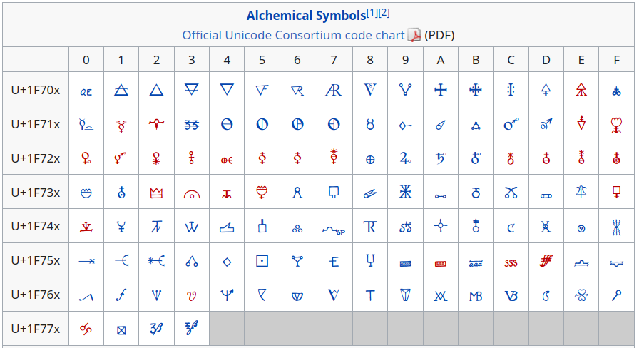
Sulfur represented the soul (the emotions and desires) 🜍
Mercury represented the spirit (imagination, moral judgment, and the higher mental faculties) ☿
Salt represented the body 🜔
I'm pretty sure these signs and all this alchemic theory can tell a lot to this research, because it's magic, and magic is ancient. not as ancient as the nature, but ancient nevertheless, or actually a little less. Or maybe not, who knows, if we consider it taking roots in the basics of nature itself, maybe before what we call the nature itself.
Those four 🜔🜕🜖🜗 are what I would study the first. They seem very fundamental in their graphic part, and I don't even understand what the other three out of the four are.
🜀 is aether, it is awesome and also shows that it's much newer than those 🜁🜂🜃🜄
I believe that sign is ae, but why does it look like qe?
I think I found myself a reason to study japanese by learning this crazy song:
ぼくたちのいるところ。(bokutachi No Iru Tokoro) - 産まれてきたのが (Umarete kita no ga)
アーティスト: ぼくたちのいるところ。(bokutachi No Iru Tokoro)
翻訳: 日本語
日本語/ローマ字
A A
産まれてきたのが
あの子の気持ちが分からない
僕の気持ちも分からない
どうしたらいいのか分からない
ダメ
ダメ
言われてみたって分からない
言うこと聞くのもできませんって
ごめん
ごめん
ごめんなさいと
ひたすら
謝る場合じゃない
この世に産まれてきたことが
そもそも間違えだったんだから
間違い侵さず生きるのが
とってもとっても難しい
何をしたいか分からない
頑張る理由も分からない
何で生きてるか分からない
ダメ
ダメ
優しくされても分からない
喜ぶふりしているだけでって
ごめん
ごめん
ごめんなさいと
ひたすら
謝る今日もないんだ
この世に産まれて来た事に
意味と感じる事もないまま
独りぼっちで生きいるのが
とってもとっても苦しいな
この世に産まれてきたことが
そもそも間違えだったんだから
間違い侵さず生きるのが
とってもとっても難しい
この世に産まれてきた僕は
愛される事もないままずっと
誰にも必要起こされずに
今日もおやすみまた明日
I don't what makes me wanna sing girly songs, now listening to L7 and recognizing stake as stick.
But this anime explains it perfectly or it rather resonates it by that girl being a guy inside.
I also wonder why do they have two different fonts for の and why does it appear so big, when upstairs, the second sign of the most of those blocks, it is tidily tiny. この is tiny, but once you remove the こ, の becomes large like this. wild thang.
(it's because i ni mi are 1 2 3 in japanese, even though they say ichi ni san, ichi nichi mitsu would probably be recognized. the reason I make such long comment on it is that ichi is hitsu, closely related to the sun, sun is one. un. is it where san letter comes? s+nasal. both S & M are She and Me.
(even though I'm a guy, not the guy who invented language, gal it was, they speak more than us))
五 is G (because of japanese go, I declare that japanese were the first literari in there, chinese only usurped them for centuries, during which they stole their achievements and declared them their own. I am a wicked man, don't I affraid to be burnt as a witch? Beware, my dear, you are way too bold. So I get intimidated and I mention again, that it's only a hypothetic pondering, I dare to touch all the possibilities, and this is a one of them hanging in the air of my speculations.
八 is H
and it could reveal some numeral order, where 8 followed 5, as if it was of those 147 258 369 square.
then F would be 2 and I think we said that 2 is n. ngh? n as ν?
f as in futa, another way to pronounce 二
FGH 二五八
and because F is digamma,
一 is also Г and thus i ~ c.
c as the first letter? are you sure? Ϸϸ is supposed to be the first letter, because it's only natural that 1 comes before 2, so thus ᚦ comes before ᛒ
and if ᚦ is θ then isn't it Θ and isn't it ☉ and when I was looking for that sign, I found this:
Salt represented the body 🜔
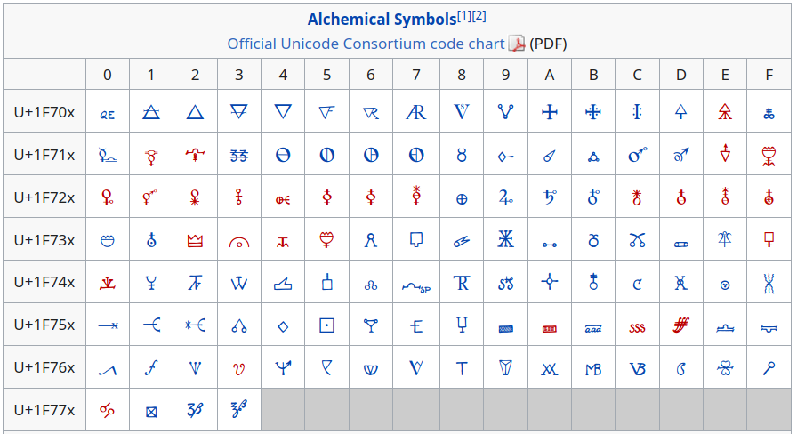
Sulfur represented the soul (the emotions and desires) 🜍
Mercury represented the spirit (imagination, moral judgment, and the higher mental faculties) ☿
Salt represented the body 🜔
I'm pretty sure these signs and all this alchemic theory can tell a lot to this research, because it's magic, and magic is ancient. not as ancient as the nature, but ancient nevertheless, or actually a little less. Or maybe not, who knows, if we consider it taking roots in the basics of nature itself, maybe before what we call the nature itself.
Those four 🜔🜕🜖🜗 are what I would study the first. They seem very fundamental in their graphic part, and I don't even understand what the other three out of the four are.
🜀 is aether, it is awesome and also shows that it's much newer than those 🜁🜂🜃🜄
I believe that sign is ae, but why does it look like qe?
I think I found myself a reason to study japanese by learning this crazy song:
ぼくたちのいるところ。(bokutachi No Iru Tokoro) - 産まれてきたのが (Umarete kita no ga)
アーティスト: ぼくたちのいるところ。(bokutachi No Iru Tokoro)
翻訳: 日本語
日本語/ローマ字
A A
産まれてきたのが
あの子の気持ちが分からない
僕の気持ちも分からない
どうしたらいいのか分からない
ダメ
ダメ
言われてみたって分からない
言うこと聞くのもできませんって
ごめん
ごめん
ごめんなさいと
ひたすら
謝る場合じゃない
この世に産まれてきたことが
そもそも間違えだったんだから
間違い侵さず生きるのが
とってもとっても難しい
何をしたいか分からない
頑張る理由も分からない
何で生きてるか分からない
ダメ
ダメ
優しくされても分からない
喜ぶふりしているだけでって
ごめん
ごめん
ごめんなさいと
ひたすら
謝る今日もないんだ
この世に産まれて来た事に
意味と感じる事もないまま
独りぼっちで生きいるのが
とってもとっても苦しいな
この世に産まれてきたことが
そもそも間違えだったんだから
間違い侵さず生きるのが
とってもとっても難しい
この世に産まれてきた僕は
愛される事もないままずっと
誰にも必要起こされずに
今日もおやすみまた明日
I don't what makes me wanna sing girly songs, now listening to L7 and recognizing stake as stick.
But this anime explains it perfectly or it rather resonates it by that girl being a guy inside.
I also wonder why do they have two different fonts for の and why does it appear so big, when upstairs, the second sign of the most of those blocks, it is tidily tiny. この is tiny, but once you remove the こ, の becomes large like this. wild thang.
Did lack of lactase gave birth to the word жид?
This phenomenon alone could cause animosity of theirs towards goyim and disdain of goyim towards them. Such a digusting piece of history if true and such a gross piece of my fantasy if it's not.
Mercury salt and sulfur are three primes in alchemy, so they may be related to the three mothers.
I take it from https://blog.prepscholar.com/alchemy-symbols and though the image there seems to be some artistic fantasy, I copy the text here, because if it's true, it probably relate to the alphabets directly, because of the number, 22, as many as letters are there in hebrew alphabet.
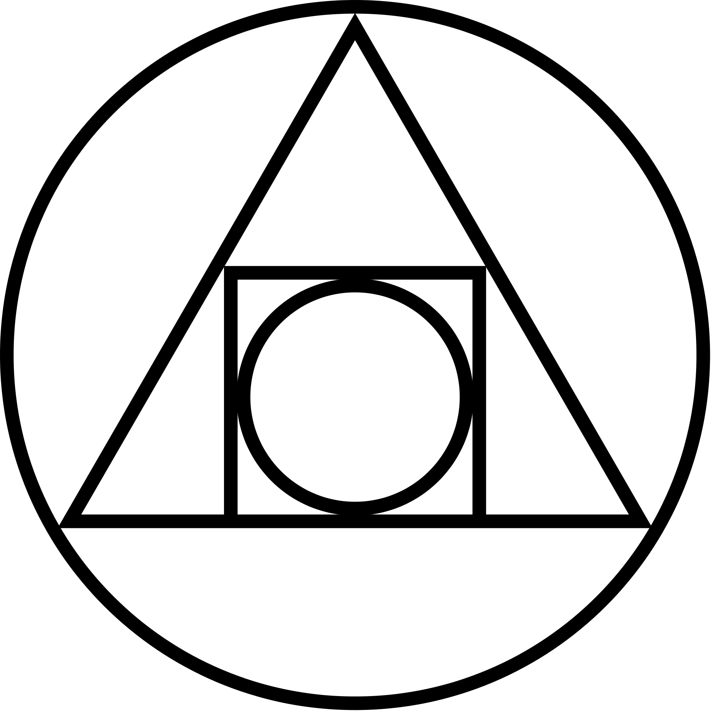
The symbol for the philosopher's stone
22 Alchemy Symbols and Their Meanings
Below are the four main groups of alchemy element symbols, along with their meanings.
The Three Primes
The three primes, also known as the tria prima, were named by Paracelsus, a Swiss philosopher, in the 16th century. He believed the tria prima contained all the poisons that caused disease, and that by studying them, alchemists could learn how to cure disease. He also believed the tria prima defined humans, and he assigned each of the elements to a different part of the human identity.
☿
Mercury (which is also one of the seven planetary metals) can mean both the element and the planet. In either case, this alchemy symbol represents the mind, as well as a state that could transcend death. In ancient times, mercury was known as quicksilver, and it was believed to be able to shift between liquid and solid states. Therefore, in alchemy, mercury was believed to shift between life and death.
Mercury is often represented by a serpent/snake, and its symbol is said to resemble a cosmic womb. Mercury is also sometimes said to represent the passive female principle, as well as wetness and cold. You can see the standard “female” sign within its symbol.
🜔
Salt is now known to be a chemical compound comprised of sodium and chloride, but alchemists believed it was a single element. Salt represents the body, as well as physical matter in general, crystallization, and condensation. Salt is often impure when first collected, but through chemical processes it can be dissolved and purified, which some alchemists compared to purification processes the human body can undergo. Its symbol is a circle bisected by a horizontal line.
🜍
Sulfur, also known as brimstone, is the active male counterpart to mercury’s passive female representation. In antiquity, it was used as traditional medicine in places ranging from China to Egypt to Europe. It’s mentioned in both the Torah and the Bible, the latter of which states that Hell smells like sulfur.
Sulfur represents properties such as dryness, heat, and masculinity. In alchemy, it could also represent evaporation, expansion, and dissolution. In terms of human body, it represented the soul. In terms of the tria prima, sulfur was seen as the middling element connecting salt (high) and mercury (low).
Sulfur’s symbol is typically a triangle atop a Greek cross (seen above), but it can also be represented by a Cross of Loraine atop an ouroboros/infinity symbol. This symbol has come to be known as Satan’s Cross and is sometimes used as a satanic symbol.
The Four Classical Elements
The Classical Elements are based on the ancient Greek belief that air, earth, fire, and water composed all matter in the world. Unlike many of the other elements in this guide, these four aren’t elements you can find on the periodic table, but alchemists believed to have significant powers, as well as the ability to create new elements.
Medieval Arab alchemist Jabir ibn Hayyan was one of the first to connect the four elements to alchemy, but the classical elements were well-studied in ancient Greece before that. The ancient Greek physician Hippocrates connected each to one of the four humours of the human body, while Aristotle connected each to a principle of heat/cold and dryness/moisture.
🜁
Air
Aristotle stated that air represented heat and wetness (the wetness is from water vapor, which was thought to be part of air). The air symbol in alchemy can also represent a life-giving force, and it is associated with the colors white and blue. Hippocrates associated air with blood. Air’s symbol is an upward triangle bisected by a horizontal line, and you might notice it is the Earth symbol, inverted.
🜃
Earth
Aristotle labeled Earth as cold and dry. Earth can represent physical movements and sensations, and it’s associated with the colors green and brown, and the humor black bile. Earth’s symbol is the inverse of air’s: a downward-point triangle bisected by a horizontal line.
🜂
Fire
In alchemy, fire represents emotions such as passion, love, anger, and hate, which are sometimes referred to as “fiery” emotions. Aristotle labeled it as hot and dry, and it is represented by the colors red and orange, as well as the humor yellow bile. Additionally, fire is also seen as a more masculine symbol. The fire alchemy symbol is an upward-pointing triangle.
🜄
Water
Aristotle labeled water as cold and wet, and Hippocrates connected it to the body humor phlegm. Additionally, it’s associated with intuition as well as the color blue, and is often linked to the alchemy symbol of mercury (as both are seen as feminine symbols). The Greek philosopher Thales believed water was the first substance created in the world.
As another contrast to fire, the water alchemy symbol is the inverse of the fire symbol; a downward-point triangle. This symbol is sometimes said to resemble containers for holding water, such as a cup or urn.
The Seven Planetary Metals
Each of these elements is a metal, and they are each connected to a celestial object, as well as a day of the week and an organ in the body. Astronomy was a major part of early alchemy, and during the classical era, each planet was thought to “rule” over its associated metal, with its position in the sky and proximity to other planets affecting the metal’s properties.
You might notice that Uranus and Neptune aren’t included; that’s because these symbols were created before telescopes were invented, and thus only planets visible to the naked eye were known to exist.
♄
Lead
Celestial body: Saturn
Day of the week: Saturday
Organ: Spleen
Lead (known as plumbum in classical times) has a symbol known as a “crescent below the cross,” and it looks similar to a scythe or a stylized “h” with a cross on top.
♃
Tin
Celestial body: Jupiter
Day of the week: Thursday
Organ: Liver
Tin’s symbol is known as a “crescent below the cross,” and it looks like a stylized “4”.
♂
Iron
Celestial body: Mars
Day of the week: Tuesday
Organ: Gallbladder
The “male” symbol often used to represent the planet Mars is the alchemy symbol for iron.
☉ (☼)
Gold
Celestial body: Sun
Day of the week: Sunday
Organ: Heart
Gold represented perfection, and it was one of the most prominent symbols in alchemy. A key (and unfulfilled) goal of many alchemists was to learn how to turn lead into gold. Two symbols can represent the gold alchemy symbol. The first looks like a stylized sun with rays emitted from it, and the second is a circle with a dot in its center.
♀ (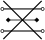)
Copper
Celestial body: Venus
Day of the week: Friday
Organ: Kidneys
The symbol for copper can be either the “female” symbol (also used to represent the planet Venus) or a set of crossed and horizontal lines.
Gold and copper are the only elements so far that seem to have different graphic forms.
☿
Mercury
Celestial body: Mercury
Day of the week: Wednesday
Organ: Lungs
Mercury has the same symbol it has when it’s part of the Three Primes: the “cosmic womb.”
☽
Silver
Celestial body: Moon
Day of the week: Monday
Organ: Brain
Silver’s alchemy symbol looks like a crescent moon, the same way gold’s symbol looks like a small sun. The crescent can be drawn facing either the right or the left.
Mundane Elements
The mundane elements make up the rest of the elements used in alchemy. They are typically more recent additions to alchemy, and they don’t have as long a history as some of the other elements. As a result, less information is known about their alchemy symbols and what they represent, although all were used by alchemists at some point.
♁
Antimony
Antimony represents the wild/animalistic parts of human nature. Antimony’s symbol is a circle with a cross above it (or the upside-down female symbol), and it is also sometimes represented as a wolf.
🜺 (
Arsenic
In alchemy, arsenic is often represented by a swan or swans. This is because, as a metalloid, arsenic is capable of transforming its physical appearance (a metallic-gray solid or a yellow crystalline solid), the same way a cygnet transforms into a swan. Its symbol is a pair of overlapping triangles.
🜘
Bismuth
Not much is known about how bismuth was used in alchemy, but until the 18th century, it was often confused with tin and lead. Its symbol looks like an “8” that is open at the top.
⊛ (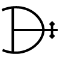)
Magnesium
Magnesium isn’t found in its pure form, so alchemists used magnesium carbonate (also known as “magnesium alba”) when conducting experiments. Because magnesium can’t be extinguished easily once it has been ignited, it represented eternity to alchemists. Several symbols can represent it; the one above is the most common.
(and that actually where the order became different in that site and wiki: in wiki Boron follows bismuth, probably by alphabet. They all go by alphabet, wiki just includes several mundane elements more, so that 22 elements is under a question now)
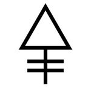
Phosphorus
Phosphorus was an important element for alchemists because it appeared to have the ability to capture light. (When the white form of phosphorus oxidizes, it glows green.) It represented the spirit, and its symbol is typically a triangle atop a double cross.
This simbol doesn't even seem to have unicode sign in the early 2021, I wonder why.
☽☉
Platinum
Alchemists believed platinum was a combination of gold and silver, which is why its symbol is the combination of the symbols of each of those elements.
Here we also don't have a unicode of this as ligature, so I have to use the combination of two symbols. So in general it makes me think that these mundane symbols were not in the alchemy at first, also further somebody needed to pull it to hebrew alphabet or whatever were their reason, anyway they're demonstratively wrong.
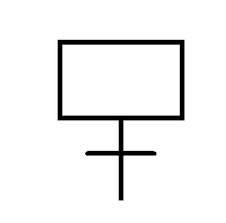
Potassium
Potassium isn’t naturally found as a free element, so alchemists used potassium carbonate, often known as “potash,” in their experiments. The symbol for potassium is a rectangle atop a cross.
(also no symbol in unicode)
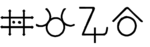
Zinc
Alchemists burned zinc to create zinc oxide, which they called “philosopher’s wool” or “white snow.” Multiple symbols can represent zinc; the most common is shown above.
There are at least four symbols for zinc and none of them is present in unicode.
Summary: Alchemy Symbols and Meanings
Alchemy element symbols have existed for over a thousand years, and they were a key component of alchemy, as well as related fields of study such as astronomy, medicine, and philosophy.
Each alchemy symbol corresponding to a specific element or compound. For example, the fire alchemy symbol looks like an upward-point triangle, while the alchemy earth symbol appears as a downward-pointing triangle bisected by a horizontal line. Alchemy symbols sometimes contain hints as to the properties the element was thought to have, as well as the history of the element.
And so, because mercury is mentioned twice, those 22 are truly 21.
but then wiki adds 3 more elements to those mudane 8:
Boron (wiki gives = for its sign, who knows if it's true, who knows if any of this is)
Litium 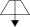 (wiki names this simbol stone symbol, and litium could be related to monolyth)
Sulfur 🜏 🜍 (we had sulfur in three primes, so as mercury it repeats itself among mundanes)
and then wiki gives more:
Alchemical compounds:
Sal ammoniac (ammonium chloride) 🜹 *
Aqua fortis (nitric acid) 🜅 A.F.
Aqua regia (nitro-hydrochloric acid) 🜆 A.R.
Spirit of wine (concentrated ethanol; also called aqua vitae) 🜈 S.V.
Amalgam (alloys of a metal and mercury) 🝛
Cinnabar (mercury sulfide) 🜓
Vitriol (sulfates) 🜖
mercurio
Alchemical processes:
The alchemical magnum opus was sometimes expressed as a series of chemical operations. In cases where these numbered twelve, each could be assigned one of the Zodiac signs as a form of cryptography. The following example can be found in Pernety's 1758 Mytho-Hermetic Dictionary:[3]
Calcination (Aries Aries.svg) ♈︎
Congelation (Taurus Taurus.svg) ♉︎
Fixation (Gemini Gemini.svg) ♊︎
Dissolution (Cancer Cancer.svg) ♋︎
Digestion (Leo Leo.svg) ♌︎
Distillation (Virgo Virgo.svg) ♍︎
Sublimation (Libra Libra.svg) ♎︎
Separation (Scorpio Scorpio.svg) ♏︎
Ceration (Sagittarius Sagittarius.svg) ♐︎
Fermentation (Capricorn Capricorn.svg) ♑︎ (Putrefaction)
Multiplication (Aquarius Aquarius.svg) ♒︎
Projection (Pisces Pisces.svg) ♓︎
I leave the names of files which once were here, to show how these processes are linked to astrology
Units:
Several symbols indicate units of volume, weight, or time.
Hour 🝮
Dram ʒ , Half-Dram 🝲
Ounce ℥ , Half-Ounce 🝳
Scruple ℈
Pound ℔
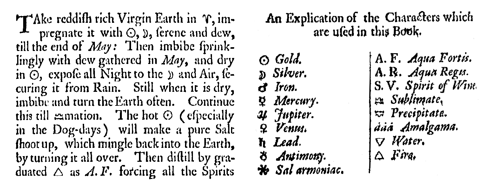
An extract and symbol key from Kenelm Digby's A Choice Collection of Rare Secrets, 1682
(♈︎ is calcination)
Montenegro is translated as black lake. like wtf. I will dig it some day.
♃ and ♄ at the previous image may look like one being the other one inverted (as in tarot card changes its meaning to the opposite when it's upside down. (opposite = upside? opposed up side? opposed down?) but the signs are so complicated that hardly are they basic, hardly are they at the basis of the alphabets. nah, I think much more simpler concepts, such as digits, are.
deti dirty
chady child chisty
dirty chort
chastity chisty
prechisty i nechisty
1 and 2 easily turn into 2 and 3 when you add surname to their name: Nancy Beth, eLisa beth, Ann Drew. oh boy, that's rather spannish, matriarchal? jewish. I am such a mean man, why am I man and mean are form of one another? begin began begun. here we can see differention between tenses (уточнениях? senses? доп.смыслы) begin is an imperative and thus the future. began is past. begun is what weh ave now. what we have now. now is a third form of some verb? know? knew? known? now is known? познаваемое. настоящее. present представленное предниспосланное.
пожалуйста стоящее (на пожалуйста на иврите)
на (бери) is equal to пожалуйста (пожалуйста работает в обе стороны. please? полезен? полезен. плис польза, п-лись, поделись - о, ещё одно слово как г-д господь госплодь? госплоть. государственное мясо? церковь когда-то была государством и окормляло паству вином и хлебом.
I find reddit-s[acing useful to highlight something important but why do I leave separate thoughts
In that list of alchemic symbols we have groups of 3, 4, 7 and who knows how many else.
So it's natural to ask: are 3 and 4 give 7? do they? whatever
Mercury (which is also one of the seven planetary metals) can mean both the element and the planet. says that maybe.
The three primes, also known as the tria prima, were named by Paracelsus, a Swiss philosopher, in the 16th century. tells that the three are less important than the 4. even though Paracelsus was a real doctor, father of toxicology they say, but 16th century is rather recent (I think the triangles are both more simple forms and more well known, more common, but who knows why, there could be any reason.
Paracelsus took mercury and sulfur from the chemical signs that existed, from the chemical knowledge that existed, ancientmost people probably didn't know such words, and such signs.
Mercury could look like the thickiest water there is, it also doesn't burn,
While sulfur not only burns, but is used for making the gun-powder:
Gunpowder, also known as the retronym black powder to distinguish it from modern smokeless powder, is the earliest known chemical explosive. It consists of a mixture of sulfur (S), carbon (C), and potassium nitrate (saltpeter, KNO3). The sulfur and charcoal act as fuels while the saltpeter is an oxidizer.[1][2] Gunpowder has been widely used as a propellant in firearms, artillery, rocketry, and pyrotechnics, including use as a blasting agent for explosives in quarrying, mining, and road building.
Gunpowder was invented in 9th-century China as one of the Four Great Inventions, and spread throughout most parts of Eurasia by the end of the 13th century.[3] Originally developed by the Taoists for medicinal purposes, gunpowder was first used for warfare around 904 AD.[4]
such signs. they're different yet are all complex,
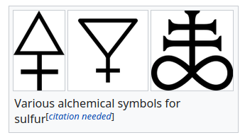 and if sulfur is a fire element, the left from of it is correct, middle form is false or wrong, the rightmost form is I don't know what, probably some other school or some other period of those signs. let's collect them here and compare:
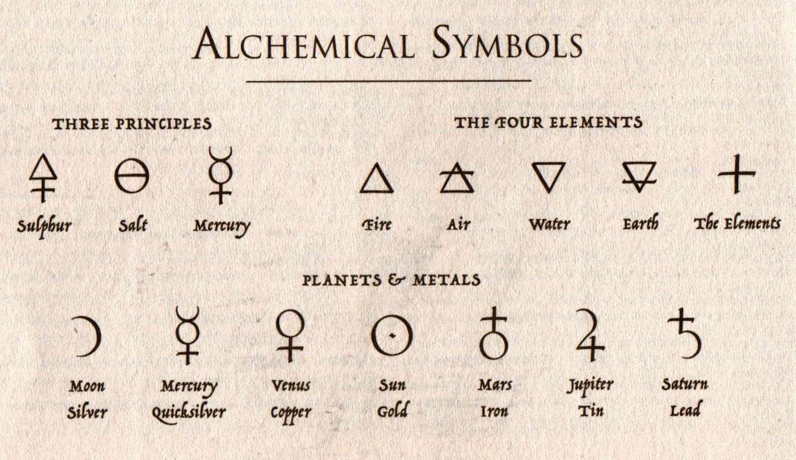
Lets' try to link those planets & metals to the other 3 and 4
Mercury is Mercury
Salt is Sol is Sun
Sulfur looks almost exactly like Veus
hm, that was easy, now we have moon (water) mars (fire) jupiter (air) and saturn (earth?) Saturn as satan opposes Jovi of Jehovi our heavenly father so to say. I noticed before that they oppose them in their graphic, they're like 2 & 5 or 2 & 3, which is more natural since there are only four. thus they probably go in this order: 🜂🜁🜃🜄 but suddenly I see they could be the sand dials, then they would be 🜄🜃🜁🜂
Fire stands first as mars for mardi. but mardi is tuestday, of two, m for mars the second letter? firs should be vowel, but it's lundi. l can be vowel! LMN it is then! but it Mercredi. N~M но не настолько же! Mardi Mercredi are the MM? самая середина недели. Jeudi is great as both lingual and vowel.
Vendredi is naturally labial, thus J is the vowel I. Saturday is Samedi, perfect lingual after perfect vowel. And finally dimanche forsunday (english has SS instead of MM, M is Mind, S is asS)
l as aleph. interesting. And naturally this order tells that monday is the first day, moon is used for counting days. or weeks?
Monday begins with labial in english, thus it's only natural that they consider Sunday the first day, but then that day has to have some other name, some name beginning with a vowel. But no such words.
And lets' check english further. If they're other culture why would they obey the same order? They're the same lune is moon, and others are believed to be synonymic. MTWTFSS SMTWTFS, no, now relation. No vowels at all. But labials and linguals are in the same rhythm. then a sincope of SS and new weed begins. Indians leave vowels separated from the consonants, arabs even believe they don't even have vowels (both lie and tortures their tongue, it's as if they try to be gross, to fit the looks: movie dubbers use for voicing the actors who are of the same type as the original ones, so everybody feels better being natural. But would some of them CHOOSE to be gross? Satanists exist and who knows what perversions people will try to make themselves and others? Future is odd indeed. Who knows where it all comes and how fast. I know I must do what I can to make the good future come faster than the bad one, so we can counterfeit the fate. Let's not misfeit her, let's do some god god good work.
Another interpretation can lay between those 3 & 4:
Sulfur for Fire, Mercury for Water, Salt for the both signs with lines in the middle as the salt has.
Is NaCl EarthAir? Clorine for air because air is gas and chlorine is gas:
Chlorine is a yellow-green gas at room temperature. It is an extremely reactive element and a strong oxidising agent: among the elements, it has the highest electron affinity and the third-highest electronegativity on the Pauling scale, behind only oxygen and fluorine.
Sodium is a chemical element with the symbol Na (from Latin "natrium") and atomic number 11. It is a soft, silvery-white, highly reactive metal.
Sodium was first isolated by Humphry Davy in 1807 by the electrolysis of sodium hydroxide.
so it raises my brows what did they name that word before. It is such a field to explore.
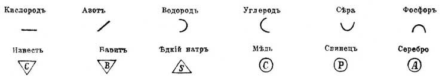
Символы
Гассенфратца и Адета
That C for carbon is interesting, and gives a little bit more
probably probability to that. I'm sorry it's all in russian, it
was the site I found the following image in a good quality: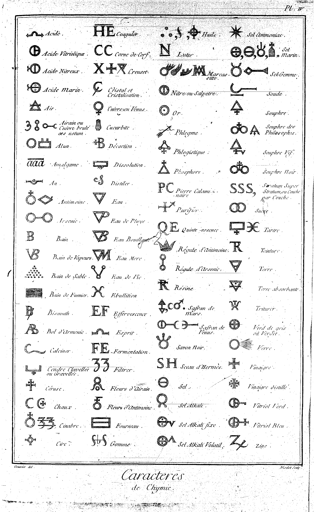
I recognize this edition, I posted pictures from it before.
It's Символы химии из второго тома Энциклопедии Дидро (1763)
And there we see that more weirdly looking sign for the sulfure, the 🜏.
And here're files named ElementsymboleLavoisiers:

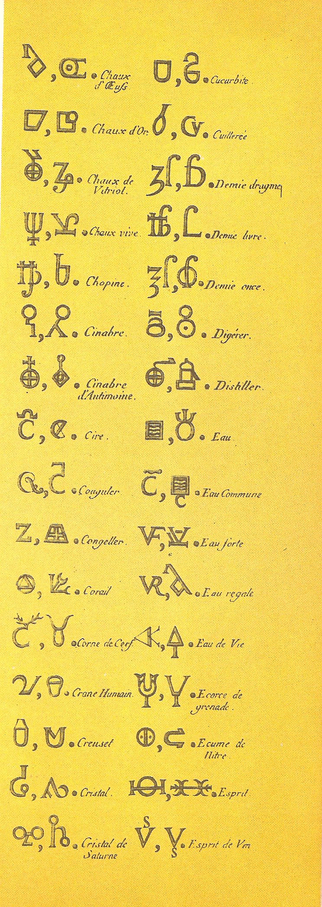
Great Lavoisier used 🜔 for 🜁? Wow, I wonder why. wow is wonder why? maybe, but more likely that it's just my poetic interpretation of a totally glossolalic interjection. междометие.
But either way it seems that only the four elements could be some ancient signs, all the other alchemy seems to be relatively modern invention. But let's not spill some children with this water. Some of these signs can have deep roots. Especially if I accept into the consideration the signs for four elements.
For example, this story with the 🜔, Lavoisier could know three mothers like 🜂🜔🜄 but then if mercury goes first for a reason, 🜄🜔🜂. ΔeV & VeΔ? ΛeV & VeΛ?
Dev & Ved I like much more. because why not to use the exactly triangle symbol whence I have one. I would use a letter formed as 🜄 if I knew one, but V is the closest to it.
Also that sublime difference between V & 🜂 make them more distinct. water is open, fire closes opening.
🜔 instead of 🜁 (somehow going first in that list, who knows why, it's in the same order in unicode) may say that he took solids more precisely (probably because it's easier to work with a powder than with gas. You don't even know if the gas is going to be lighter or havier than air. After the first experiment you maybe can, or if you read the theoretic grimoirs on alchemy, you probably could. I'm only guessing. I conclude it because of 🜔 being used as 🜁 and not 🜃
It's 🜀🜁🜂🜃🜄🜅🜆🜇🜈🜉🜊🜋🜌🜍🜎🜏🜐🜑🜒🜓🜔🜕🜖🜗🜘🜙🜚🜛🜜🜝🜞🜟🜠🜡🜢🜣🜤🜥🜦🜧🜨🜩🜪🜫🜬🜭🜮🜯🜰🜱🜲🜳🜴
🜵🜶🜷🜸🜹🜺🜻🜼🜽🜾🜿🝀🝁🝂🝃🝄🝅🝆🝇🝈🝉🝊🝋🝌🝍🝎🝏🝐🝑🝒🝓🝔🝕🝖🝗🝘🝙🝚🝛🝜🝝🝞🝟🝠🝡🝢🝣🝤🝥🝦🝧🝨🝩🝪🝫🝬🝭🝮🝯🝰🝱🝲🝳🝴🝵🝶🝻🝼🝽🝾🝿in the unicode and it's 🜁🜃🜂🜄 where I found it first (who knows where) so it's double weird. 🜁 is always the first of those four. As if it's A, Air, Vowels are Air indeed, as Sefer Yetzirah does tell, I dared to argue, insolent kid!
🜂 for the second is very eastern: ki for fire, k as the first consonanant (k & s & anter)
And allow me to guess that the unicode for alchemy was made in the east (if it's not, what does it disprove? it just cannot become an illustration to what I say. But 🜃 after A doesn't make much sense. 🜄 would be perfect second letter, and I looed for "🜁🜄🜃🜂" and found some girl named Vesta (I used to give a surname, but decided why would people who look for her find my page instead, so nah, especially since she's not a specialist, so what's the point) so I registered for a consultation with her, I will ask her if she placed those signs arbitrary or by some book or other reason. She could place female triangles inside the male ones to feel protected, I think it's one of her ideas, the protection or the feeling of that. And she just answered saying that it just felt right. I literally jumped out at some random gal, I told you my communication skill is not what I mastered.
I think it was only natural, that "🜁🜄🜂🜃" had more finds, because it's a more consistent zigzag and 🜄🜂 are in the middle and it also makes more sense as an alphabetic sequence because of that, because of 🜂 is similar to 𐤂 (that's Г, and once again c ~ l, ג~λ.
and 🜃 is similar to Д, especially in some archaic form of it.
So I will ask that girl, or will I teach her what sequence is right, because I think I figured it out, but I have scheduled the consulation already, so we'll see what it may bring. what else am I to do that evening anyway. 🜃 is terra. Didn't I compare these signs to abcd before? I think I did, I will see when I sort these notes by topics.
so is 🜄 this much similar to 🜃, just as b is similar to d, epecially in roman cursive.
is 🜃 a half of 🜄? because ᚦ could be of ᛒ.
🜁🜄🜂🜃 because c is already lingual, and if Δ is 🜃 then is it a form of 🜄? I don't understand. Because I just thought that 🜂 is lingual (языки пламени) and 🜃 is some other form of lingual, as if that line is the teeth, then V also needs teeth, and are vowels labial? because lips seem to distinguish o from a and i, but wait a minute, they're different triangles. Is it some code to confuse the profans? provence, provincials? Because it's too much to work out since it's not V with the dash but the A.
This 🜁🜄🜂🜃 hypothesis is shaky as a card house they even remind. One guess upon another.
But it's funny, they do remind AVΔe maybe? I recognized 🜔 as e, and even though it was 🜁 in Lavoisier's, why not consider 🜃 e when it fits, especially because 🜔 seems to be common sum of 🜁 and 🜃, when I recognized them as Na and Cl. So is 🜃 e or d? vowel or lingual? earth is solid, it would be natural Д, even natural T, as Terra. but E for Earth also works. and then 🜔 could be not ☉ but ⊕. Or is it something inbetween? Okay, I'm thoroughly confused, I will return to this some other day.
No, I'm not. water removes gas? I'm not sure about that, but further it comes more consequent.. no, it doesn't. water removes fire, not the other way around, and fire eats solids. and solids remove air? I don't know by that sequence can go both ways, I think here's how it goes:
Here I found a good diagram: sun, air, ocean, rock. 🜂🜁🜄🜃
But if I look from here upwards it would be 🜃🜄🜁🜂 EVAΛ va in french ехал in russian. z is r in vietnamese, carrot is cà rốt (cà is vegetable, rot is red?) củ cà rốt is also carrot, củ is tubers, клубни, rốt is translated by google's translator as "at the end"

Agnis Aer Aqua Aros?
erra in Terra is close to earth and эрэц. as if brits and hebs placed at the bottom what latinen put at the top: the erra, era, ero, eros as a first god. Was it considered to be the birthgiver of the sun? Earth is Mother, first was (the word) and (the word) was god.
it's a riddle from John 1:1 and the word was mother, the first god.
Here's a plato's бестолковый report: The body of the world. This is composed of four bodies, earth, air, fire and water, the whole available amount of which is used up in its composition. -Plato, Timaeus 🜃🜁🜂🜄? Nah.. I am an opponent of plato and his disgusting commitment of destroying the books of his predecessors is very shameful indeed din't help him to become the best of all philosophers (but from academic point of view it did, but academia is exactly his tradition.
Once again, 🜁🜄🜂🜃 is the most alphabetic representation, because AVΔе
a reflects d
v reflects ν reflects n reflects N reflects И reflects и reflects u reflects v
🜁🜄🜂🜃 when it is alphabet is open at least in the first two letters: A V and only so. 🜂 can be both Λ(L) 𐤂(c) but also Δ(d) but because A & V are open.. can they be followed by the two closed? because even though 🜂 can be both Λ, 𐤂 and some c-like L
, how would I open 🜃? It is great as both Д and Ⱚ, both are final in their lines. why would e be in the line where A were. abcd. d dera? 土 tsuchi, 土地 tochi, but in almost all words 土 sounds as to. 十 is to and 土 is to? And you want me to think that there's no link between chinese hieroglyphs and european texts? hahaha/
to thus two forms of it two? ten! two are parallel, ten are in or on. en. is it because they counted by tens laying them ortagonally upon the previous ten? but you could do it only once, thus пятнадцать, но двадцать один и так далее при большем счёте.
🜂 is both c, l d, t and graphically they are close, but I was compaing majuscule forms of theirs (not t, t is just because of d, but it resonates l not less than d resonates c, both are the same strokes just dashed vertically or horizontally. I don't even know what I'm doing here, but I keep on digging alchemic signs and here I come to those curvy forms of
in the context of ☿♀as if mercury is copper plus sulphur. Argentum Aurum? is it how the ancient table of substances went? I doubt that B was баритъ is barite (baryte) which is BaSO4
It is some notation predating mendeleev table, which didn't integrate these triangles and circles, Because of C for carbon? because I saw that four elements can be drawn by different rotation of an angle, ant this is very similar: if ɔ was not hydrogen, but oxygen, I would get very exited, but alas Oxygen is some — and it is weird and makes me ask: is this table accurate? But then my reasoning broke of the reality of me knowing nothing about this table, Guessing not making any research is not just bold, it's irresponsible.
ɔucп
>V<Λ
this way not only do we rotate it clockwise, we also have it very alphabetic. ovsl.. does this final Λ tells of the i-line in the order of imnl mn as claster? iml is the original form of this line? if we compare it to ᛆᛒᚦ, yes.
>VГ is that angle rotated faster ОПГ is also alphabetic. almost opq. organized criminal group in russian is опг.
AFTer AUTo. OUT. I'm going out until I have something to say, I work on automatic.
depending whether we consider fire in the sun or in the lava, I think lava it is, because then air, water, solid, fire is how the geosphere goes (There are several conflicting definitions for geosphere. It may be taken as the collective name for the lithosphere, the hydrosphere, the cryosphere, and the atmosphere.) And thus 🜁🜄🜃🜂 it is, the way that Vesta felt it right. Also because ABCD is how the line goes, not ABDE, but then 🜁🜄🜃🜂 also was recognized as ABCD, so this argument is null.
ABCD instead of ABC or ᛆᛒᚦ closes the question about was it air or eairth the A, with four letters we have place for every element. Д feels directly lingual, when C (being also lingual) feels somewhere in the throat, which is more H, but then throat is as active as teeth (even less) and still tongue does the dance. And anyway горло is not far from горы, and that's the reason why velars could stand for solids.
And A is naturally Air, because vowels are the lightest and because sefer yetzirah tells so, at least the version I read first: there are different version, and I noticed them to differ)
Not only 八, but also 日 is H.
Just as in manyogana, there can be many forms of the same syllable:
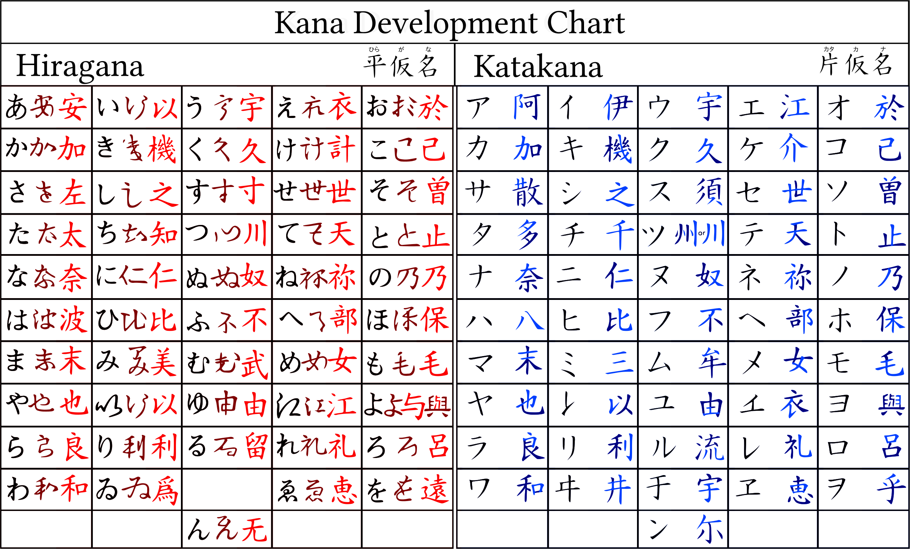
Here you can only see it in katakanic tsu, and of course origins of hiragana and katakana are not always the same, but I saw table where there were much more variants, ah, not manyogana, hentaigana:
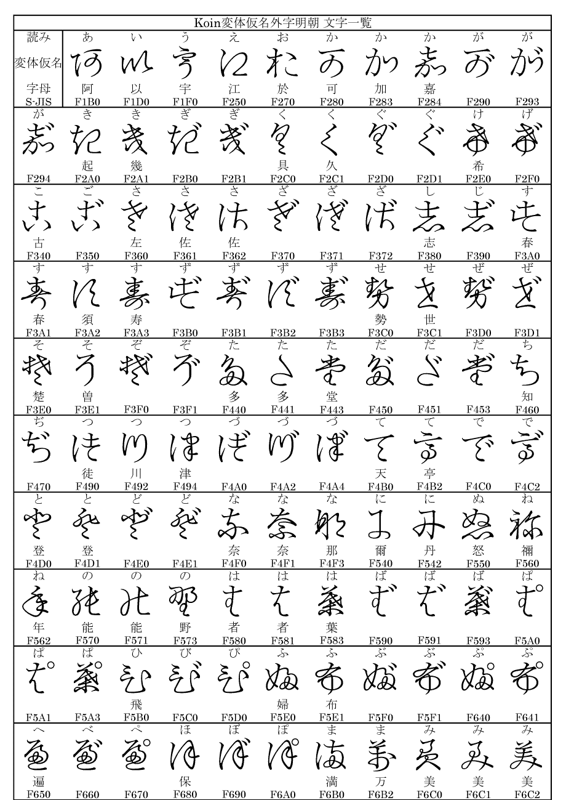
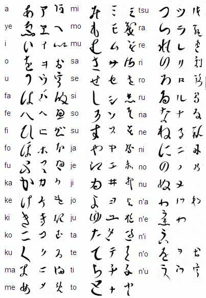
and edomoji:
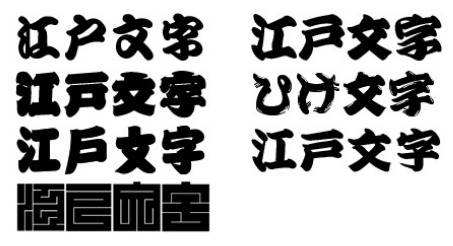
and iroha:
以呂波耳本部止
千利奴流乎和加
餘多連曽津祢那
良牟有為能於久
耶万計不己衣天
阿佐伎喩女美之
恵比毛勢須
Which could be the source of mantoygana.
Iroha could be written with some different syllables sometimes, those syllables are used by several hieroglyphs each, so technically you could read the very same poem differently (more or little, I yet have to know japanese to say it. Yet I know for sure that some other poems can be combined out of gojuon. And to be sure about it I have to first find some such poems. Am I sure because I saw them but didn't remember (if I don't understand it I will not remember it, like these signs I saw but maybe I is familiar and ro, others - not.

Click this link and klik this button. It sounds as pyo. which is very interestying, because Р is R in russian. pussians they're like pussin like puskin. русские пушки, русские ракеты, русь стройсь,
Russians know polacks as lacks
Polacks stop russians from coming west. Они дважды в европе появлялись и у них такая странная любовь к русским потому что те русские, видимо их родители были начальниками (и скорей всего до сих пор, раз дети в европах живут да америках,
the following chapter is some polotical pondering (I dont' hold them, so you could be shocked, if it doesn't interest you, jump through the next trait to go to some linguistic)
The main difference between russia and america: russia brings to those nations weapons, americans have to go there with all their weapon and to help the government pacify those armed pro-rusian forces. Russia has no other business to place bases in their countries, only after the weapon they use will cause conflict large enough so they have to help prorussian forces, the forces they usually send weapon for or to. Russia sends weapon, because they cannot do anything else well. How so? So. They are military force of the jewish puppetteers? In that crazy point of view, yes. Jews are some force, but to attribute everything to them is not correct, they play like snakes (bible teaches of the wise snake) wise is white (whether european (not caucasian, fuck that jewish psy-op, they're not white enough. How do I know? Many jews are quite white. But why this caucasian meme? Because it's a misconception, and that silly anthropologist who introduced the caucasian meme whether never lived in Caucasus or lived among pure-blood russian harnizon garrison (from word guerre, I assume, and what is funny, it's garnizon in russian.) but more likely he didn't get to caucasus at all for some reason, chechens may look white, but to blonde european they would be less white than them, no caucasus nation I konw of today fit into the white ethnostate. Each nation their own place. Fuck nations man, fuck that political калshit.
watashi is chinese wa, vietnamese ta, some other nation's shi.
Та & she are synonyms in russian and english.
Русские имют тва слова для she: она и та. И именно та используется в виде суффикса: делает (та)
делают has plural eiy её? делаю has io as its suffix, becaues that verb tells I do. делают прибавляет к этому слову форму множественного числа, т.е. по самой грамматической форме можно видеть семантику.
Ta is not exactly vietnamese, because according to google they say Toy, but a friend who came out of Veitnam tells that it's Ta. Той is genetivus of Та in russian. Та is she in russian. And it is another example of pronouns' antonymy.
Wa Ta She could be Me Thee She or Me They She or She could be taken from some other language where all these three were I I I. in a form understood to everybody. Immediate translation of the speech could be considered polite. And thus shorter forms, Wa is a japanese word for I. The same as in china, with some akanie dialect.
和わ is japanese (like literally this syllable means japanese)
Japan; Japanese-style Wa (Japan)Japanese Wa is the oldest recorded name of Japan.
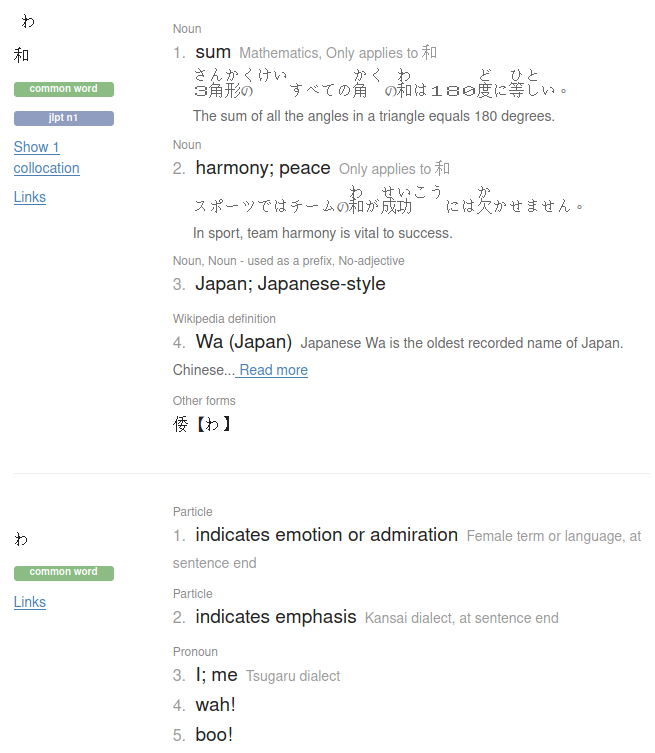
The Tsugaru dialect is reputed to be so divergent from standard Japanese for those who are not native speakers, that even people living in the same prefecture may have trouble understanding it.
And that is the japanese I have to learn. Kyōzō Takagi (ja:高木恭造), a famous poet who wrote in the Tsugaru dialect.
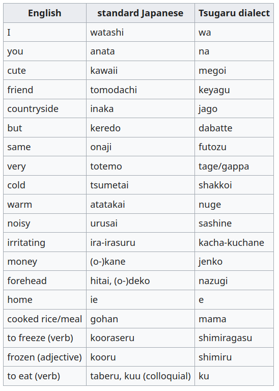
kooraseru, according to google seru is to let, suru is to do.
here's some link to how seru is understood:
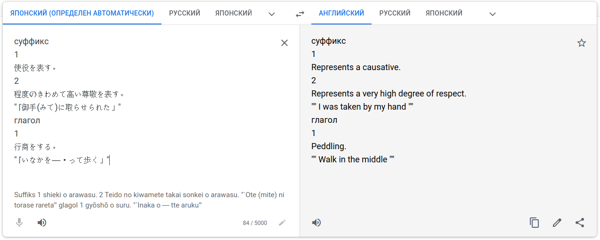
I was looking at these examples google delivered for seru and trying to find seru in them, I see o:
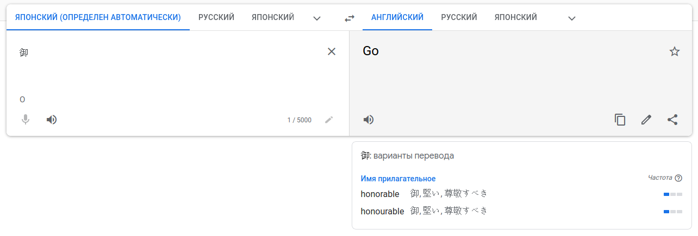
Are these neuronets unweaving our language? Because what human would translate that honorific o as go? only some neuronet, comparing russian судаль сударь и государь. And russian seems to translate japanese after it is translated into english, because it translate that honorific as идти, and I wonder if that could be the case. I maybe have to find a language after which it is translated into english? I think english is the basal language of google, because in dutch it's not ge but gaan.
That example is here to show you how cautiously we should take any information, it can always be false with some probability in some detail.
o-te is your hand, and instead of yo they use honorable o.
And I think I found my Tt: 手
and o is definitely 口 which brings o very close to c & ç & Q
çon is in garçon and leçon (boy and lesson) is çon son?
op
qr
ab
cd
?
ab
cd
op
qρ
σt
?
ef
gh
?
ij
kl
mn
?
Well these two lines are the least understood. are they?
uv
wx
yz
ab
cd
ef
z takes place of f in greek. and w at the position of c can be related to чего-чево flip and all those c~b absurds.
abcdef could it be abcde or abde or abe? could c be e?
abefg(hijkl)mno too much of an assumption, that iий a потом ещё и л, it's just a little bit too much to take. it's weird and crazy, I think I want to be fine.
y stands exactly where next vowel would be in the 4-letter-line. That's why I noticed that f~z? no, because z after y is the way it was in greek, it's not directly connected with the y, unless t is.
And I said I knew there were other iroha-like poems:
The Ametsuchi no Uta (天地の歌) or Ametsuchi no Kotoba (天地の詞) is a Japanese pangram, authored in the 9th century AD, which is credited as being the oldest perfect pangram in the Japanese language. Its name roughly translates to "Song (or Words) of the Universe".
The text of the pangram written in hiragana (including the now archaic ゐ wi and ゑ we as well as the also archaic 𛀁 (ye)):
あめ つち ほし そら
やま かは みね たに
くも きり むろ こけ
ひと いぬ うへ すゑ
ゆわ さる おふせよ
えの𛀁を なれゐて
The text of the pangram written in kanji:
天 地 星 空
山 川 峰 谷
雲 霧 室 苔
人 犬 上 末
硫黄 猿 生ふせよ
榎の枝を 慣れ居て
The text of the pangram written in Hepburn romaji:
Ame tsuchi hoshi sora
Yama kaha mine tani
Kumo kiri muro koke
Hito inu uhe suwe
Yuwa saru ofuseyo
Eno yewo narewite
A rough and necessarily nonsensical English translation:
Heaven, earth, star, sky,
Mountain, river, ridge, valley,
Cloud, fog, mudhouse, moss,
Person, dog, top, end,
Sulfur, monkey, grow!
Hackberry branch! Keep getting more familiar!
What a poor poetry they had in 9th century.
Iroha is much better, but it's reported to be of later origin: Authorship is traditionally ascribed to the Heian era Japanese Buddhist priest and scholar Kūkai (空海) (774–835). However, this is unlikely as it is believed that in his time there were separate e sounds in the a and ya columns of the kana table. The え (e) above would have been pronounced ye, making the pangram incomplete
So it could be that Kūkai wrote that first silly pangram, and iroha is by an unknown author.
The first record of its existence dates from 1079
以呂波耳本部止
千利奴流乎和加
餘多連曽津祢那
良牟有為能於久
耶万計不己衣天
阿佐伎喩女美之
恵比毛勢須
いろはにほへと Iro ha nihoheto 色は匂えど Iro wa nioedo Even the blossoming flowers [Colors are fragrant, but they]
ちりぬるを Chirinuru wo 散りぬるを Chirinuru o Will eventually scatter
わかよたれそ Wa ka yo tare so 我が世誰ぞ Wa ga yo dare zo Who in our world
つねならむ Tsune naramu 常ならん Tsune naran Is unchanging?
うゐのおくやま Uwi no okuyama 有為の奥山 Ui no okuyama The deep mountains of karma—
けふこえて Kefu koete 今日越えて Kyō koete We cross them today
あさきゆめみし Asaki yume mishi 浅き夢見じ Asaki yume miji And we shall not have superficial dreams
ゑひもせす Wehi mo sesu 酔いもせず Ei mo sezu Nor be deluded.
It is said[by whom?] that the iroha is a transformation of these verses in the Nirvana Sutra:
諸行無常
是生滅法
生滅滅已
寂滅為楽
which translates into
All acts are impermanent
That's the law of creation and destruction.
When all creation and destruction are extinguished
That ultimate stillness (nirvana) is true bliss.
The above in Japanese is read
Shogyō mujō
Zeshō meppō
Shōmetsu metsui
Jakumetsu iraku
That traditional form of iroha, of incomplete 7*7 square showing that even kana began to scatter (скатываться, разматываться, skit, покидать or is it skip. at least now I know what skit is and it's not quit. кид кидать and покидать?)
I wanted to check if they had 4 or 7-tet music, but There has long been a debate about Japanese modes and what defines them, to this day there is not a single modal theory that can completely explain Japanese music. it has several traditional modes, and some of them are interesting, yet neither 7 nor 4-tet music I found, so whatever. later.
(hit another one, which is false and a waste, but also works sometimes, I powered up with milk and chocolate first, they say it has to deliver immediate charge of energy, we'll see if it really works like this. They say weed prevents diabetes, I want to believe? I want to know, I make experiments, I report them here. I probably smoke more weed than usual because I met a corona-kun yesterday. Avoid corona-kuns. I welcomed him home myself. He who you admire may ruin you, he whom you neglet may raise you high.
Here's an мысленный experiment for you:
й as one. ', י.
you twist a piece of metal and mechanically fix it in напряжённом состоянии. По идее вся его сила работает на то, чтоб разорвать фиксацию и распрямиться. закалённый метал определённым образом должен быть: чтоб ни гнулся ни ломался, упругий метал, как тот что я положил в основу арки между прихожей и предванником на 264.
вопрос: можно ли будет снять это напряжение не механическим, но электромагнитными средствами? Можно снять его лишь один раз или сама кристаллическая решётка будет генерировать это напряжение? Если она будет стремиться высосать его из электрической сети обратно? может отсюда происходит переменный ток, который использует стартовые процессы, когда значение максимально. нам чители лекцию об этом, но я её не помню, помню лишь скачок даже не уверен чего, напряжения наверное, когда систему включают. ударные нагрузки помойму это называлось, всё было на русском, естественно, поэтому на этом и пишу сейчас.
I align letters in the form of tetraktis, and I come to O being the way V was in archaic lating.
A
BC
DEF
GHIJ
KLMNO
But isn't tetractis of four lines, yep, HIJ is how it ends. or HIK or HIL? Hij is He in dutch, so hij it is.
G Hij, Super G, the G-d, cd, царь-государь, сударь старь старший старец сен-пай. сенильность от этого же корня определённо. границы рисуют политики, между людьми границ нет, мы делим одну и ту же культуру, между всеми людьми общего больше (написал большего.. и задумался что вот как мысль теряется, грамматика захромала когда. И если даже я избавлюсь от грамматики в мыслях, мне всё равно придётся переводить мысли в слова, ещё сложнее, проще думать словами. ну или как это я сейчас делаю.
sow what I was trying to say:
klmno added to the system where Y was the final letter, the Ѵѵ
So first opqrst was what уфхцчшщъыьэбюя for jews.
opqrst is definitely similar to ufhtschshsche..
russians just unfolded it, then ъыь are where uvw are, and uvw is more like ьъы which would be naturel, from the simplest form to the most diverse. uvw is followed by xyz. ъыь are followed with эюя and z shares button with я, and ю is similarmost to y, especially because it's ij, and it raisese question: are ij וי desu ka?
is se in raise the same as in russian self is se: sobirattsa, a in there are closer to e than to a, but not as a in english, but as я. ya.
Я is similar to R and er may sound as Я or Sha in japanese, j is both y and dж эгэйн. R is read as Ж and З in china and vietnam.
Do east asians know our letters long before missionaries? What if they know them sometimes better than we do, uderstanding that english R is Ж or Z, as cursive r tells, btw: ч, in russian it's ч, tsch, ch.
In latin they don't draw r as much deep as it is here, but neither do russians, they draw cursive ч directly as european write r (italic doesn't cursive it)
so.. Я is J as Ja and Jk and I and Je and Ж and Z (zie as an antonym?) и R и what? is P also here?
It is some linguistic journalism.
also because journalism is saying something somebody doesn't want you to say. everything else is pr.
it is orwell I think.
yet I have no goal to be ballsy bold.
yet is male form of but? yet as яйцы и butt как зад. з & б meet again. how interesting.
yet is also уд. j mail I, m female me.
Я активный залог, Меня, мне пассивный залог.
Я мужское, Мы женское, simple as that.
I male, Me female, I active, Me passive.
I & M are the AuM.
u as both и & u or v of ו
u as 𓏭 linked below and M links them on the top. Or is M m 𓏥? mi.
ni is you in chinese, but in japanese it reflects mi only because mi is three and ni is two. me is wa and ni is anata wa. na inside aphixes remind of atash and ta is I in vietnamese, and I suspect they're not too far, I know neither of them well. or at all. ta in watakushi is I, I spoke about it and it seems as it came confirmed from my subconsciousnesss.
Who wouldn't want to hear it? Some authority, a professor who instead of doing his own science prefers to be some administrative boss. Extraverte faggots get outta science! Some give the authoritarian parasites their ubi and let them fuck off. They're not about money, they're all about power, as they understand it, power over other people. those sociopaths, sick and sad people, let's cure everybody! We need, we all need to be cured. don't cure se ipsum, seek some true medical help, entrust in people, don't be scared, humanity with the help of those organizational dudes and not necessarily faggots, so don't use this wide brush please, am I selling off? Let's be aggressive, because that is one of the teenagest traits. awkward and soft-aggressive in all wrong situations. searching. ANd when I find what I'm looking for, I will look so much further.
Aren't penguins perfect middleground between humans and birds! And they came out of the sea, so did societies of humanly penguins and birdy penguins split in the past and ave birth to birds and all the beasts? Penguins were those who dared to come out of the sea first? are seals that beasty branch of penguins? Are seals and walruses related to penguins more than to anybody? They seem to coexist rather naturally. And birds are not very far. Are walruses with baws paws parted ways with the penguin colony? Australian sea lion could be one of those mutants who began growing legs longer than of walrus, and those lions are alreasdy very related to dogs. Did they make new breeds such as boxers mating dogs with australian sea lions? and those beasts have much more fur than walruses, who lost feather penguins still had, but some усы are not exactly fur so far. Penguins have feather and their hands are even less than walruses have. but between penguins and walruses are seals? No, seals have fur. Seal could be a descender of walrus, because walrus almost have no fur. and on some photos they very maybe do. and a mouth of mustaches as of whale, the baleen.
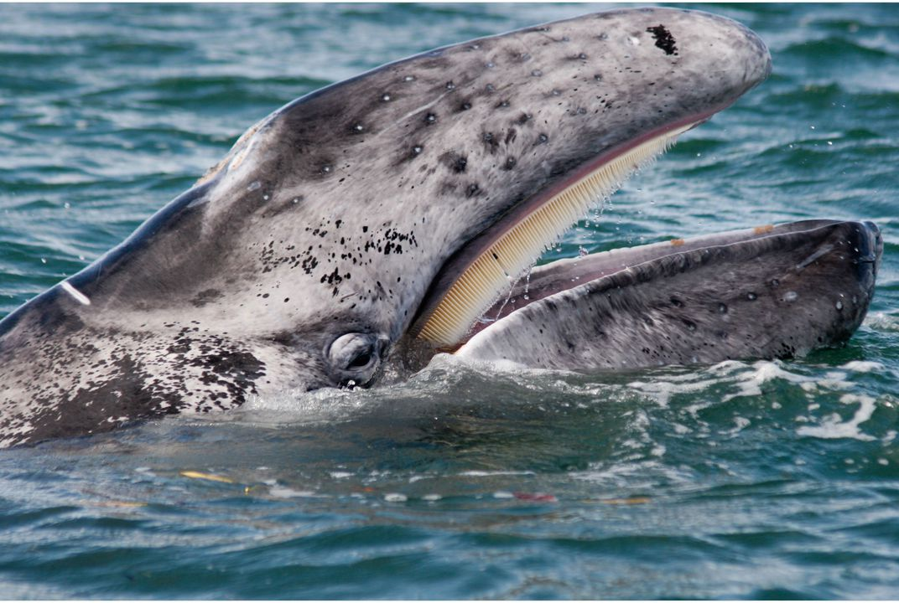
It looks like see animals have all their fur on the inside. Is it how we're different? some of us turned itself inside out.
And would lingua turn into lingam? And would some inner organ of which we don't even know is face and mouth of the new, inverted, entity? Is it like caterpillar and a butterfly?
I don't know, I think eyes were always eys, but what do I know, especially of this, it's just a fantasy.
When we think of whales, hair is not usually something that comes to mind – but most whales and dolphins have some hair when they are born, and certain species keep their hair throughout their life! ... There is one notable exception – the Amazon river dolphin, which has stiff hairs along its snout throughout its life. But I look at them and I just don't see any fur. and hair in the mouth too, only some sharp tiny teeth.
Why is this whale serie even here. I'm sorry I got carried away, but I included chemistry and other stuff, and I just wanted to see what китовый ус is, у джека лондоа он был скручиваем, но упругим, можно было закатать в жировой шарик и заморозить в нём. Не знаю правда ли это, но наверное он бы не стал считаться великим писателем если бы его могли высмеять за нелепую выдумку, наверное это на самом деле было антропологическое наблюдение.
Зачем я вообще завёл речь про дельфинов? где дельфины и где алфавит. Пингвины не дельфины, ины, мифины?
Just to close the topic of Jack London, here a whale seems to be looking upside down, on his back, and you can see those hair separately, and they could be both rolled into a ball and frozen in lard and they would be painful in a stomach.
these are baleens.
былинные, ага, back to the language.
успехи успевать
https://japaneseparticlesmaster.xyz/iroha-poem/ gives iroha in detail, and one of them is this:
i ro ha ni ho he to chi ri nu ru wo – 色は匂えど散りぬるを (いろはにほへとちりぬるを)
wa ka yo ta re so tsu ne na ra mu – 我が世誰そ常ならむ (わかよたれそつねならむ)
u wi no o ku ya ma ke fu ko e te – 有為の奥山今日越えて (うゐのおくやまけふこえて)
a sa ki yu me mi shi we i mo se su – 浅き夢見じ酔いもせず (あさきゆめみしゑいもせす)
these 12 syllable lines are 5 and 7 syllable linese чередуются.
5 & 7 lines are also bases of tanka and hokku poetry.
tanka is 57577 (is it some censored song? some incompete song? some rhythmically modified song? because 57577 can be sang perfectly and with the coda it looks finished. repetition legitimizes musical solutions, if you can rhyme it you probably had that very word in mind for some time to see and not to make a typo, you can see that song at https://vk.com/video58166550_160250235 at 4:05 ahokoto(ha)) afukotowa (also because alphabetic beginning is awesom again. imawakagirita omahetamo namidawateno mononidzoarikero. isn't it 5 7 5 6 8? wateno could be wateeno. or, more likely mo of mono stands alone at the previous line, and thus it's woven into won. mono is also one in japanese, a person or his stuff as the representation of the person, as the artificial part of the person.
Just 575 in hokku.
夫 looks like some ta, and it's even better, it's otto. and it's husband. and in otosan (father the same husband word is used, only he's not husband to them, he's oTo father of the family. by he's not a father to the wife,
妻 wife
夫人 wife, madam, missis
奥様 wife, madam, married lady
女房 wife
家内 wife
かみさん wife
細君 wife
連れ合い wife, husband
婦女子 woman, wife
内室 wife
内儀 wife, landlady, secret thing
御上 government, authorities, emperor, wife, madam, landlady
配偶者 spouse, wife, husband, consort
夫 husband
主人 master, husband, owner, host, mistress, landlord
旦那 husband, master
亭主 husband, host, master, landlord, innkeeper
夫君 husband
連れ合い wife, husband
主 chief, lord, owner, god, supervisor, husband
ご主人 husband
夫の君 husband
配偶者 spouse, wife, husband, consort
夫人 is fujin, thus in this combination 夫 is fu, as in futher.
And here is what I was looking for: 奥様 is okusama.
奥 is oku is back, and probably male hieroglyph also stands for front, as if women have ass on the front too. some super ass, which can give birth too, two asses, one is normal other is magical.
oku as in okasan (mother)
oka and oku are like asa (morning) and asu (tomorrow)
雄お
Noun - used as a prefix, Noun - used as a suffix
1. male See also 雌 め
Noun - used as a prefix
2. manly; brave; heroic See also 雄叫び
Noun - used as a prefix
3. larger (of the two); greater See also 雄滝
Noun
4. man Archaism
Noun
5. husband Archaism
Place
6. O
Other forms
男 【お】、夫 【お】、牡 【お】
This very sign is officially used for our latin O
Look if it's in manyogana. In iroha o's 於, in manyogana too. That poem is the origin of manyogana.
You remember one poem, you remember how to draw it and you're good to go.
Did it create kana itself? When you knew how to write down any text, only with mistakes at first. But your mistakes will be readable, man instead of ma, and then it become a standard. your rather arbitrary (not yours, but of who created the hiragana katakana)
If the origin of hiragana katakana is in some iroha, in this iroha, then they are correct that hiragana katakana are about a millenium old.
Hiragana developed from man'yōgana, Chinese characters used for their pronunciations, a practice that started in the 5th century.[17] The oldest examples of Man'yōgana include the Inariyama Sword, an iron sword excavated at the Inariyama Kofun in 1968. This sword is thought to be made in the year 辛亥年 (most commonly taken to be A.D. 471).[18] The forms of the hiragana originate from the cursive script style of Chinese calligraphy. The figure below shows the derivation of hiragana from manyōgana via cursive script. The upper part shows the character in the regular script form, the center character in red shows the cursive script form of the character, and the bottom shows the equivalent hiragana. The cursive script forms are not strictly confined to those in the illustration.

Katakana was developed in the 9th century (during the early Heian period) by Buddhist monks in Nara by taking parts of man'yōgana characters as a form of shorthand, hence this kana is so-called kata (片, "partial, fragmented"). For example, ka (カ) comes from the left side of ka (加, lit. "increase", but the original meaning is no longer applicable to kana). The adjacent table shows the origins of each katakana: the red markings of the original Chinese character (used as man'yōgana) eventually became each corresponding symbol.[10]
Early on, katakana was almost exclusively used by men for official text and text imported from China.[11]
Official documents of the Empire of Japan were written exclusively with kyūjitai and katakana.

Some signs are different: O is the same, but A is different.
And iroha uses the A of katakana. So here two accounts of the same event:
Katakana was developed in the 9th century (during the early Heian period) by Buddhist monks in Nara
Look at this weird figure standing instead of エ [e] some cut katakana (kata is fragment, thus cut)
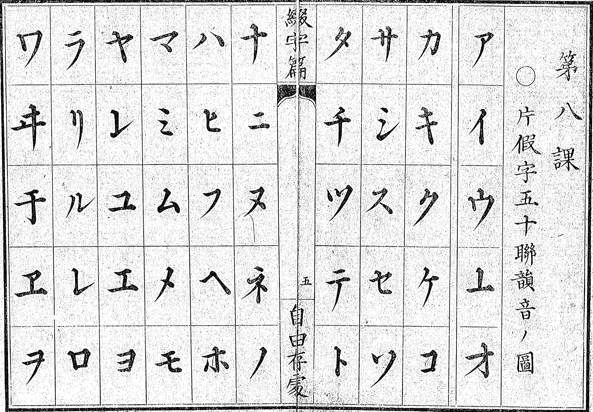
ソ is indeed so, I wonder how they don't confuse it with リ which is ri.
Yet it is very basal and official and also contains all 50 signs.
in kana:
いろはにほへと
ちりぬるを
わかよたれそ
つねならむ
うゐのおくやま
けふこえて
あさきゆめみし
ゑひもせす 京（ん）
in kanji:
色は匂へど
散りぬるを
わが世 誰ぞ
常ならむ
宇井（有為）の奥山
今日越えて
浅き夢見し
酔いもせず 京（ん）
浅 they use here is shallow. but sounds is asa, and that is morning. in other sign. and shallow and morning can be semantically connected, and thus etymologically too.
Can that asa be combined from the other two signs they actually used in iroha?
阿佐 is recognized as asa, but they don't seem to be used in the modern japanese like this. nobody can translate them together. 阿 is literally A, the letter and abbreviation for different A's as for Africa, aho begins with that a, and ho is 呆 and is stupid enough to be translated as stupid.
and 佐 is recognized as sa, but also as help. maybe because suke is assist, but maybe by some other cause.
So it only shows how complicated is the question of the japanese writing system, and I still think that that cursive fasthand was used in chinese as phonetic record too. And japanese monks only borrowed it. I used to say japanese kana is as ancient as the european alphabets. I don't know how old are those alphabets, I don't work in the dating stuff, and so I don't know, I just research it by formal basis and there I see that 阿 does look like A and also like bot, and it's ironic that that very β-like shape was used for katakanic α.
is 以呂 in iroha, and 以 is to, with, by, according to, in order to, so as to, because, use.
呂 is only recognized as Lu in both chinese and even japanese. What was Ro is Lu now? Or is it how ai hears japanee Ro? R and L is the same sound in japanese, and o and u are very close.
It is really interesting: https://jisho.org/search/%E5%91%82
呂 is used for many Lu's in chinese names and also for Ro in Robert.
and the actual use of is even more interesting:
呂りょ
Noun
1. bass range (in Japanese music) Music term, Abbreviation
Noun
2. six even-numbered notes of the ancient chromatic scale See also 十二律, See also 律
Noun
3. Japanese seven-tone gagaku scale similar to Mixolydian mode (corresp. to: re, mi, fa, so, la, ti, do) See also 呂旋
呂旋法りょせんぽう
Noun
1. Japanese seven-tone gagaku scale (corresponding to: so, la, ti, do, re, mi, fa), similar to Mixolydian mode See also 律旋法
呂律ろれつ
Noun
1. articulation
ろれつが回まわら ない
Expression, I-adjective
1. speaking inarticulately (slurring, lisping, etc.)
Other forms
呂律が回らない 【ろれつがまわらない】
呂旋りょせん
Noun
1. Japanese seven-tone gagaku scale (corresponding to: so, la, ti, do, re, mi, fa), similar to Mixolydian mode
So that iro could be related to that ro with 7-tone spectre. and that ro could be short for rainbow.
and also raduga, radugu (in accusativus)
I feel like their 曽 zo is used as russian же. And some sign like that could easily become же, looking at its graphic side. But I expect something like 水 for ж for жижа. жижа из земля because it's lingual? or how else would such lingual word become a word for liquid. l~r~ж could it be so? It could maybe., so work with this hypothesis applied, see where it leads me.
жидкий хлипкий liquidкий всхлип скрип крик и ис зы хай ноут.
what do I want to do? I want to live like a human being.
врот брешет решет голова рот ис мауц,
рот голова? head eat? the eath? that eat, other shit, ass shit sit shit зад срат
вот эта предыдущая строчка офигенный оранус.
оран эс ин оран-гут-ан -оранг уд он good он. уд удачен, удовлетворителен.
U in both udacha and luck is the horseshow with her horns upwards.
For several years now I work on these books, when I had to build all this time.
It's mostly because we're being poor, because we're taught to be нищимы духом
нищий и нищим. нищим мы помогаем, тащим мы и нищим мы подаём. тощим мы тащим, тонким мы тянем, м ин тянем ис дефинитли мы but in толстым, it is им. them. толст отдельно и им отдельно, этот суффикс и слагается или спрягается по типу местоимений: им белым, ему белому, ей белой, её белую, его белого, их белых, им белым,
и ый instead of он, as if I instead of one and Oн.
ая instead of она. зелена но зелену, не зелеё. еёную есть. ый is белый ис белен? алый ис ален? малый ис мален? ноу. молодой молодень? дурной дурень это да не ой и ай и ый, но ной и най и ный, он is short form of оный. она is short form of оная. т.о. these pronouns are originally adjectives.
он она оно они это прилагательные вместо суффиксальных местоимений его её их
она can aso be suffix in белена, зелена, because белен и зелен тоже могут быть суффиксом он, но давай проверим эту гипотезу: белена белену (вместо белеё, ещё раз, она он оно они - это не суффиксы, но прилагательные.
а что тогда за суффикс на ны не ну ной о_не (похоже, что предложный падеж это форма дательного. дательный с предлогом, потому и предложный. но для белены не предложный падеж, а родительный, так что ещё и не все предлоги, дурацкий падеж. давай найдём предложный не в форме дательного:..
во множественном числе не дательный а особенный
ны н нам ны/н нами о_нах.
Удивительно, как во множественном числе винительный падеж совпадает то ли с именительным то ли с родительным (в зависимости от диалекта наверное) а в единственном предложный с дательным (у единственного числа нет вариантов, предлагают значит дают. А во множественном числе винят либо по имени либо по матери.
о нах как о нас? ны как мы? временам - нам, головам - вам.
Суффикс тот же что и у этих местоимений, что это за местоимения,?:
ны и вы? н и в? Н~M (that's misleading kirillic script, that Н is N, N~M because almost all forms of that Мы is with N: Мы is only in the Nominativus, others are Nas, Nam, Nas, Nami, Nas - especially if we remember that first wone is pure Мы, the cases suffixes seem to чередовать m & s (and remember that both words could be written by M and Ϻ if they don't lie, they seem to insist, I seem to have seen the proof of it or a good illustration of it, I don't know how much next to B~C it is.
В случае с суффиксами существительных, грамматические флексии отличаются:
белый белен
белого беленого
thus белен is just a short form of белый, бел, with attached suffix own (both in phonetic and semantic)
белому белёному
белого белёного
белым белёным
о белом о белёном
белые белёный
белых белёных
белым белёным
белых белёных
белыми белёными
о белых о белёных
О чём я говорю? Эти окончания - суффисы, только не первого лица, а третьего.
(позже посмотрю почему суффиксы первого и третьего лиц отличаются и насколько)
(он) бел (придумал местоимение когда суффикса нет позже, из прилагательного?)
его белого
ему белому
его белого
им белым
онём обелом
(они) белы
их белых
им белым
их белых
ими белыми
оних обелых
э, белэ, друже, печенеже. (это звательный падеж, устаревший)
thus (as звательный теперь именителен) is ый эй?
эй как местоимение, оригинально.
эй как этот, по крайней мере одно э.
(я)
меня, мои
мне
меня
мной
обо мне
я как белая?
я меня белой
почему я перешёл на женский род, если был в мужском? род как рот? речь?
давай сначала женский род в третьем лице потреплем:
(она)
её
ей
её
ей (ею)
оней
оная оной (о ней)
её ей её ей чередуются в женском роду
также как г и м чередовались в мужском роду.
й & м как I & me, только отчего-то й в женском роду, а м в мужском. совпадает если ж is j which is y and m is m, m for male, j for g of gal.
rl = N? I wonder if it could be some ᛚᛇ but then I know that nah.
real life is now?
им: скажи им, сходи им, пассивный залог от слова он.
его: спроси его, вроде предполагает более активную роль его, но бей его - его снова пассивное положение у того кто этим местоимением обозван.
череование ей и её более интересно. Кто вообще так расположил падежи? Может изначально их всего два: м/й -им значит me, ей значит какой-то I? это может быть как муж и жена чередоваться за счёт суффиксов. -ан., ну а здесь за счёт каких-то других коих-то других. кой какой как значит к кому? мими от кого к коми то же самое ми? ему еми, ети, что это, куда я забрёлся, в болото русских суффиксов.. надо же. не надо же.
белой ей
белую её
о ~ е
у ~ е
ю ~ ё
?
ю ~ ё may make sense, because ю looks exactily like io. and is semantically io in пилю.
io пилю
i пили (и = y = ij = jej? = you? - is it antonymy of suffixes or just a coincidence?)
it пилит.
2nd person can go weirder, because when it's not an imperative, it's ишь, and that's how ich is read in bavaria (the antonymy of suffixes or a coincidence again?)
ا
ب ج
د ه و
ز ح ط ی
گ ل م ن س
ع ف ص ق ر ش
ت ث خ ذ ض ظ غ
and the numberless farsi letters چ ژ پ ک
I just felt like watching if we can continue that tetraktic
sequence and to see if any alphabet fits it and it seems arabic
does. and very interesting signs come in the centre: a e m z of
some sort.ب ج
د ه و
ز ح ط ی
گ ل م ن س
ع ف ص ق ر ش
ت ث خ ذ ض ظ غ
and the numberless farsi letters چ ژ پ ک
A good line to demonstrate that it's Air above Water in 🜁🜄🜃🜂: וְר֣וּחַ אֱלֹהִ֔ים מְרַחֶ֖פֶת עַל־פְּנֵ֥י הַמָּֽיִם׃
Is 🜁🜄🜃🜂 avoda? (the work) or is it another apophenic element in this work? because it's abcd.
Is sick with hiccup
Is sad with aд?
add up? a do do
do as in dobavv
u as in ubavv
u~s because sbavv
prefixes and suffixes are such short words, are they who I was looking for. It is all around. Eagle Owl and Willow
русские считают √ птичкой, а американы жучком. Мы смотрим вдаль и вобщем, они смотрят на детали. Они голова мы шея, мы же граница со всем миром что от них за нами, того где обезьяны живут. Для нашего подвида остальные естественно объявляются обезьянами, потому что это то что между ними (и на минутку нами) общее, а так-то мы отличаем смышлёных японских макак от агрессивных африканских.
Could it be that the rhythms of the earth on different tectonic continents with different form thus somewhat different tone,could influence the internal tones of all the animals in that area. But I would rather believe that sun's intensity matters way more than the
I knew 🜁🜄🜃🜂 was Air, Water, and then I wasn't sure if it was fire first begaucse of жарить's g, kuroi, гарь, (in english almost all fire is labial, it is weird: fire flame burn in russian we only have пожар энд по ис a prefix.
Fire is close to both Гарь и Жарь, гарь и жарь скорей всего одно и то же слово изначально.
Why would they take F for Ж or visa versa? It's digamma, double g, for which ж (or Ζ!) and the legend of F came out of θ (or the other way around? or at all? look deeper into it, I hopefully will)
EFGH are EЖЗИ? or EЗЖИ?
З is literally double c
З as 3 are zee = three, and is definitely ᚦ,Д,D,d,maybe evenT if the understroke is that axe Т топор.
молот Тора топор
If жовто-блакитный yellow-blue, and blue is so close to the black, both are the colours of the sky, балдахин? не знаю, вряд ли, жовтый может быть red if r is read in south-eastern manner of viets and chinx.
What used to be O or N in some alchemic signs is ethane in modern science, because organic chemistry notation ignores hydrogens so the two following formulas are equivalent:

is literally 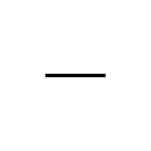(I found this think in a meme)
{kind=link}
It seems they ignore carbons too, they only show the links between them, and hydrogens are naturally fill whatever valent links there're being left:
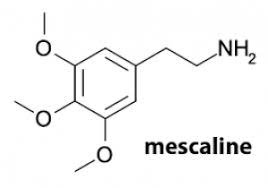
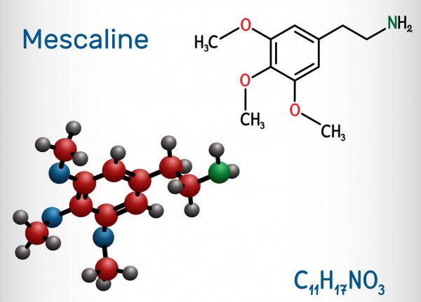
3 does looke like З[z] but z is closer to 2
z as two in the second line. the ultimate 2
but only in greek, in latin and english it's F double г (га- означает 1 в слове гаплоидный, ди означает 2 в диплоидный, или может то га было голландским ge-)
as if Z was AZ but even before that, before A came it was BZ BX BT plural B. Bx is box & books.
beith is houth house одна и вторая стена. B & J are those B Z and in russian it's aZ Bu.. Ca
Literally Ca. Ka.
az естъ, bu быть, ка класть
ta in take is thee, ke kidai cut kuss (both kussen and кусать)
en is ть -- en is and and ть is と, до-, тебе, да (как и)
That Vesta girl was correct in her guess (or a knowledge she disguised as such) those 🜁🜄🜃🜂 can be used as writing system: there are 24 combinations of them: 4*3*2*1 (the position of the fourth letter is totally predicted by the previous three) and those are 3 aettir by 8 (it's from runes, what they call older futhark is believed to be of 24 runes) 4-letter alphabet is used in our dna, so it's the code of nature, though I'm not sure it was attributed to water, fire, air and earth for some reason, I need to research about pharmadynamics of purines and pyrimidines. Notice, that they are also of two kinds, so that airwatersoilfire thing can make sense as some relict of the theories of the previous civilizations. Or it is just a coincidence by which both nature and humans came to the idea of 4-fold of the world, and it's only natural if you can attribute one system of 4 to the other system of 4.
including карточные масти? огонь буби черви воздух? Heart Pike Clubs Diamonds are almost ABCD, and they layed into that line not by that reason, but by heart being in the form of cloud, Pike in the form of drop of water, balls of clubs are obviously solid matter, like stones or apples, and diamonds are in the form of the fire sparkles. But in russian it is diffirent: Diamonds are Буби there, Hearts are Черви, and those are B & C and Пики & Вини are both labials, Две буби? Б и В
АБВГ is russian order, or is it АБВЧ?
Крести А? Как алеф в глаголице? Как первая буква на востоке?
Крести ещё назыают Трефами, и алеф в глаголице похож на t, словно они дразнили тех, у кого T была последней, как и Я похоже на А, русские агрессивные обезьяноиды. Но может я гоню и натягиваю то, что не натягивается, русские могли и понятия не иметь про эти четыре элемента кому какое дело блин. Но зато я узнал, что буби это бубны. музыкальные инструменты:
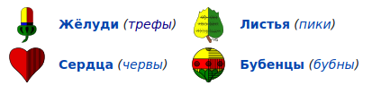
and even like this:
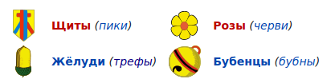
I think I didn't want to go in the history, здесь я сдаюсь на милость историков (что они там понаписали на самом деле наверное и сами не знают где правда где вымысел) и с чего бы мне это делать, когда сами внутренние структуры алфавитов могут рассказать много интересного, а они факт в гораздо большей степени чем то что там написано.
So I'm a little psyched about that gal so it seems, don't forget that they're the water and to be with them a fire tongue should be.. I should be cautious especially as a lion I'm fire, I' male double fire, lion man.
Don't think about gals. Serve the higher purpose, serve the higher priestess, surve the other god. survey search serve these words could be related. Don't think of gals, think of something else.
Don't think of letters, think of building the sphere.
That gal instantly disproves J Peterson's claim which catboykami repeats, about beautiful face being symmetrical, because look at this photo, it's assymetic and it gives it charm. Peterson's face is maybe symmetic but that's all you can sy about it, kami's alright though.
AB
DC
EF
HG
IJ
LK
M
ON
PQ
SR
TU
WV
XY
Z
Выделил показать, что М is indeed middle letter.
Natural minor is ABCDEFG thus it's more basal than major, and if major is z, then it's Zador.
AB
DC
EF
HG
IJ
LK
M
ON
PQ
SR
TU
WV
XY
Z
Only f the firest half kept all the letters closest to vowels in one of the columns. Why does it all change dramatically after M? I see! Becaue it's not bustrophaedonic, let's rearrange and see, what we see:
AB
DC
EF
HG
IJ
LK
M
NO
PQ
RS
TU
VW
XY
Z
M changed bustrophaedon into regular script as we know it.
so that if the first half collects vowelescs in the left half, the second half places them on the right. Does it tell that the second half had to go right to left? Or is it a further wisdom to make the half symmetric as yin and yang so that their movement doesn't stop.
Q because it reminds O (and almost includes u) and S because of σ form.
I'm not sure about that previous thing at all, So I move to something else, something I worked with in the bath, and it will be scanned some day, here is the thing:
I noticed that..
Lineal symmetry is a little misleading:
ABCD
EFG
HIJKL
MNOPQRST (because m and т, because M & Ϻ, because p & р, because O & Q, 'cause ορσ)
UVWXYZ (because UVWY, BECAUSE H & K in the I-group, because ov X being double v? X~Z)
𐤉 how comes I don't know the phoenician alphabet at all. I don't know if I can trust it. History is a corrupted science, if science at all. Why should I bother taking the risks when modern times delivers ENOUGH of information to reconstruct what I want to reconstruct.
Anyway, to close the topic so far, the unicode phoenician and the 𐤉
𐤀 𐤁 𐤂 𐤃 𐤄 𐤅 𐤆 𐤇 𐤈 𐤉 𐤊 𐤋 𐤌 𐤍 𐤎 𐤏
𐤐 𐤑 𐤒 𐤓 𐤔 𐤕 𐤖 𐤚 𐤛 𐤗 𐤘
𐤙
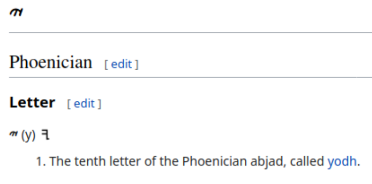 𐤖
𐤚 𐤛
𐤗 𐤘 𐤙
𐤀 𐤁 𐤂 𐤃
𐤄 𐤅 𐤆 𐤇 𐤈
𐤉 𐤊 𐤋 𐤌 𐤍 𐤎
𐤏 𐤐 𐤑 𐤒 𐤓 𐤔 𐤕
𐤚 𐤛
𐤗 𐤘 𐤙
𐤀 𐤁 𐤂 𐤃
𐤄 𐤅 𐤆 𐤇 𐤈
𐤉 𐤊 𐤋 𐤌 𐤍 𐤎
𐤏 𐤐 𐤑 𐤒 𐤓 𐤔 𐤕
𐤗 𐤘 𐤙 are
𐤗 is 10
𐤘 is 20, so I believe up to 90 it went in these vertical teeth.
𐤙 is 100, and I believe hundreds up to 900 went in horizontal teeth or zigzag if you wish.
just like 𐤖 𐤚 𐤛 demonstrates (they are 1 2 3 written right to left)
And thus up to 1000 it went and thousands were written by an overstroke or whichever other means.
and by combining the sequence of the phoenician alphabet to the prime's numeral signs, we got 7 lines.
𐤖 𐤚 𐤛 𐤗 𐤘 𐤙 could go from cunieform times: they're basically three strokes: vertical for ones, horizontal for tens, diagonal for hundreds, just the very three strokes were standartized in the late cuneiform period.
But the letters don't seem to be able to be disentigrated into cunei šticks.
Back to the pika-chu:
The following image shows that ADP has H atoms on it's "tail"
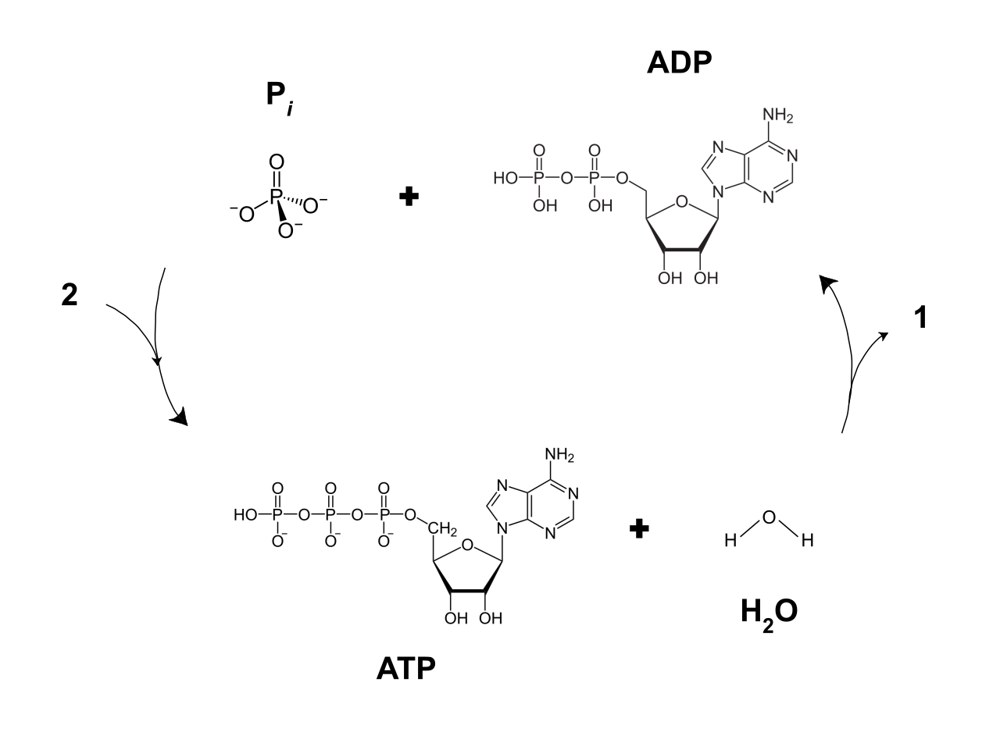
and the next image shows that it doesn't:
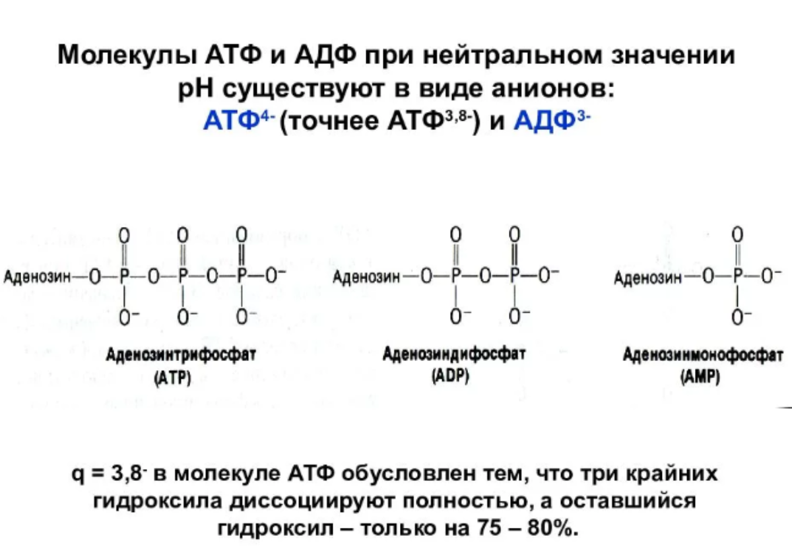
I asked this question, here was the response:
Functionally, in biochem, the ones without the hydrogen atoms are correct. In reality? No idea.
So is it one of those cognitive dissonances stopping people from getting science with less of an effort? Because ones with the hydrogen atom are more popular.
and this writing into this blog made me dig deeper and I noticed myself, that
The text on that picture literally tells:
Molecules ATP & ADP at neutral pH exist in the form of anions ATP4- (more precisely ATP3.8-) and APD3-
Thus, possibly, in other values of pH they are not onions anymore.
количество переходит в качество - этот гегеленинский мем зомбировал меня не на шутку.
Я должен сделать новый, и лучший, продукт, не надо десять томов бессвязной ерунды.
Сделай Игл-Мод мэп оф райтинг системс. (with seas of hypothetic relations between the form of the neighbours (far and close) I'm looking forward to sail in the sea between chinese and russian or latin for example, A 大, 大 is long O in okii: 大きい , big, o-какой! кий кой краткая форма слова какой is actualyy как. крутой крут, какой как. очень крут. кручусь hussle, какой как качусь? кажусь! как кажется so seems so is видимо? sound son so sweet short smart start art rotate articulate too late
Alphabets are of chinese? very possible, it's very ancient writing system, no way we didn'tknow aout therm.
В в Видеть is from 目 me (eye), 眼 me (eye), 見る mesu (see(to))
in chinese 目 is mu (eye) I is me. what if they show not at nose but at eyes? or what if they 're smarter not to show at one's eye, not to occasionally hurt it,
And M as 目 tells they read it turning text 90°. As we also know because of 一三二亖 that's how it goes in the unicode, weird order, probably they give it to their kids in this weird order. who knows. odds before evens. I'm guessing.
一 i
三 mi
二 ni
亖 shi is not een 4, chinese google translates it as I(я) and jisho doesn't.
and I was thinking of Ш before I went google. shi is 4, I'm sure.
四 is shi in many japanese words, but that seems to be chinese (on-reading, and I never was explained what those on and kun were, they were just hammered into my head without meaning, and thus also prevented me from understanding everything else, since I don't understand even the basics, I just memorized it as a parrot. So I have to go back to those hiragana katakana. what are those hira and kata? why kana~gana thing is named like that, what its syllables mean? For this I need to live in japan or find a specialist who would take me as a I only in the beginning of the journey, but I well, made a good way most of it's path is still in the future, so let's prepare and work for success. I see three letters in chinese hieroglyphs:
一 i
三 mi
目 me
二 ni
日 ki, hi, nichi, ni?
亖 shi
四 shi
五 is wu in chinese, go in japanese, i in japanese, itsu. weird, weird, may my mind get augmented with some deep knowledge of different languages, I need to look into them, I maybe should leave this language seances and move into biotech.
Я мог разбогатеть миллион раз. один раз точно мог разбогатеть, и эта биткоиноистерия либо снова
чухан шуган у шуганого успех может быть лишь в каком-нибудь аутизме типа искусства или даже на счёт науки не уверен. Падут ли мои семена на благодатную почву, и сколько по времени у тких психов занимает приход славы? дольше чем у нормальных, это точно. Но если я найду что-то настолько значительное, тчо оно будет работать инструментом для переводов с незнакомых языков, то это будет бомба. Словно то, что я здесь на копал не достаточно бомба, это всё по большей части руда, из которой можно сдеать бомбу, но возможно какихе-то компонентов не хватает. ALARM ALARM all spies spice up at what is this madmen writing! O
, I'm only making some breakthroughs in science. it was a figure of speech.
Further investigation of comparing numerals to european culture made me question the validity of my comparisons, because am I not cherrypicking? Or do they actually converge at the initial points and go wayward further on, which would happen naturally at some level, so why not 4 or 5. three mothers are common an the rest is all combinations of them (三 shows that you can combine 二 and 一. But then why do these common principles use different words for them? because different meanings were translated in different languages. maybe, keep digging. We took hieroglyphic signs for letters, we took their reading without knownin all the language, we bastardized the chinese hieroglyphs
I M N as they're given in chinese unicode are 一 三 二 (I could be l, and probably was)
I M N are definitely three mothers, and the third one is in the centre? M for Measures, N for end? No?
I is aye. N is нe.
I is ええ[e] (ай is хай)
N is いいえ [ie] (ne is nai)
doubling of vowels is to show their length, long i in ie and long e in e. But semantically what matters is 1 vowel is yes, 2 vowels is no. 一 as Ies (yeah is e), N as No (futa is фу, бу, boo, as in both, if they're both, it's taBoo to enter, третий лишний, Он один, Они одни, двое по крайней мере, ones, only, lonely, I'm confused, are you enjoying it? it's weird, but more entertaining than Becket)
汝 [い (i)] is archaic form of you. I, antonymy of the pronouns. No such antonymy is noticed among suffixes or prefixes so far, so it's note-worthy indeed. I also still not exactly sure what they are. My first guess is those are names of some ancient nations. I was Europe ИвРоПа (pays is land in french. nevermind that s, that pays is read as pay (пэй))
pay rent. land as lend. taxes as pays purd pour le pays.
rent ~ lend and so on. Awesome finds. Get more of these.
give get v & t get has to. give has of. But if get had от, it would be antonymy of prefixes, even when they're postfixes, but we have to and до which allow us to explain get & give without antonymies, yet I thought of в (in) at give until I found of. Is of the antonym of в? but then of has that o- which could be of a- or un- as non- and taking it higher to where.. to negation, not higher, I aam high told me to think higher, no weed for me, I'm going to build again. Please make me an architect.
I think I have to give weed away first. Then I will shave and look perfect.
precept предписание, насавление
concept cписание? общее представление
cept is kept? from PIE root *kap- "to grasp. so I think keep is on far from that.
But for some reason etymonline drops the ball at keep:
keep (v.)
Middle English kēpen, from late Old English cepan (past tense cepte) "to seize, hold; seek after, desire," also "to observe or carry out in practice; look out for, regard, pay attention to," from Proto-Germanic *kopjan, which is of uncertain origin. Old English cepan was used c. 1000 to render Latin observare, so perhaps it is related to Old English capian "to look" (from Proto-Germanic *kap-), which would make the basic sense "to keep an eye on, see to it."
me I personally totally equate -cept and kept: PIE root *kap- "to grasp. both.
bi- book bit beat about 'bout bate bitten
On in on-yomi is sound: 音
Kun in kun-yomi is meaning: 訓
yomi is 読み reading, because 読 is to read, and it seems japanese -mi is -ing.
I will figure it out later, but now see, I have three japanese hierogliphs learnt from the material I thoughtlessly knew.
込 is a hieroglyph that was invented in japan, and because of that it doesn't have on-yomi,
Сам перевод этих понятий даёт историю: японцы должны были знать как читаются эти иероглифы и каной подписывали как они читаются. Я не фантазирую? кунное прочтение японское исторически. кана что это за тема такая вообще? Из ирохи она происходит? Или ироха случайно собрана из них, а они были изначально с этими иероглифами связаны? Тогда это высочайший уровень поэтического мастерства (словно предыдущего было недостаточно) а может хэнтайгана другие формы использовала, пока ироха не стандартизировала иероглифический набор? Или вся та идея с манъёганой лишь натяжка не лучше моей мнемонической каны?
Я до сих пор не выучил ни песенку, ни стихотворение, ни мантру. но хотя бы узнал что такое он-ёми и кун-ёми.
Also one of the most useful links to learn japanese, most of its grammar in that tiny article:
https://en.wikipedia.org/wiki/Okurigana
But what am I doing here? Collectiong wiki links? Let's give up weed and hold back for some time.
I have some more important tasks at hand than this enterprise with impressive results but rather vague perspectives of reaching the chosen goals.
Колдун кол дует? фелярит? у другого? Какой-то скандинавский колдун (носитель колдовской традиции говорил о ритуале поедания собственного семени чем мен я шокировал,
мен я
себя
ся
одно и то же я или да?
ся with you.
self с алеф
алеф аз
аз есмь
алеф ~ ай эм ~ I am?
what is ef in hebrew or arabic?
al is el in spanish or french le and english the - it is like a drift of the letter from ᚦ to l (le et el) to al in arabic the is al! I remember. In hebrew it's ה. in russian ithis the these that those thus though there then are это это эти то те итак хотя там тагда. Очевидно, во всех словах корень т, т.о. т и есть th. мало кто знает, но ת без точки читается как th in thoth.
thus actual t is ט? Doesn't it look like ת upside down?
א ב ג ד ה ו ז ח ט י כ ל מ נ ס ע פ צ ק ר ש ת ך ם 𐡌 ן ףץ בּ
א ב ג ד ה ו ז ח ט
ע פ צ ק ר ש ת
But to my sorta surprise (sorta because I took two lines against one, it surprised me they were so close and also noticed that it would be abc.. opq..
abg they say it was, which directly reflected opq then r is whether a later sonor edition, or was voiceless. s & t are voiceless alright against gimel and daleth.
abcd was reflected by opst? c was z?
Почему я вообще решил что русский принцип гласные вперёд универсален. Потому что когда вспомнил что говорят что С была звонкой, а затем звонкая с точкой стала, а без точки глухая.
А сейчас вижу что их гласными обозвал, звонкие эти, и естественно же что когда гласная сочетается с согласной получается звонкая. Т.о. ABC is more basic principle: B is the combination of A & C. or A & D? ABD.
ᛒ is ᚦ and ᚹ? not w, was alef w? w is also sorta vowel, and more likely to give B in the result, but w..
I definitely was thinking of old-hungarian 𐲀
which is recognized as some other european forms of a A actually reminds it, exactly the same lines, only one of them is longer in A. not exactly: rightmost line опиается на руку, которая в египетском и венгерском 𓀀𓀁 и 𐲀𐲁 or rather 𐲁𐲀 if we place them in the same direction.
𐲀𐲁𐲂𐲃𐲄𐲅𐲆𐲇𐲈𐲉𐲊𐲋𐲌𐲍𐲎𐲏𐲐𐲑𐲒𐲓𐲔𐲕𐲖𐲗𐲘𐲙𐲚𐲛𐲜𐲝𐲞𐲟𐲠𐲡𐲢𐲣𐲤𐲥𐲦𐲧𐲨𐲩𐲪𐲫𐲬𐲭𐲮𐲯𐲰𐲱𐲲(this one r2l, next two l2r)
𓀀𓀁𓀂𓀃𓀄𓀅𓀆𓀇𓀈𓀉𓀊𓀋𓀌𓀍𓀎𓀏𓀐𓀑𓀒𓀓𓀔𓀕𓀖𓀗𓀘𓀙𓀚𓀛𓀜𓀝𓀞𓀟𓀠𓀡𓀢𓀣𓀤𓀥𓀦𓀧𓀨𓀩𓀪𓀫𓀬𓀭𓀮𓀯𓀰𓀱𓀲𓀳𓀴𓀵𓀶𓀷
𓀸𓀹𓀺𓀻𓀼𓀽𓀾𓀿𓁀𓁁𓁂𓁃𓁄𓁅𓁆𓁇𓁈𓁉𓁊𓁋𓁌𓁍𓁎𓁏𓁐𓁑𓁒𓁓𓁔𓁕𓁖𓁗𓁘𓁙𓁚𓁛𓁜𓁝𓁞𓁟𓁠𓁡𓁢𓁣𓁤𓁥𓁦𓁧𓁨𓁩𓁪𓁫𓁬𓁭𓁮𓁯𓁰𓁱𓁲𓁳𓁴𓁵
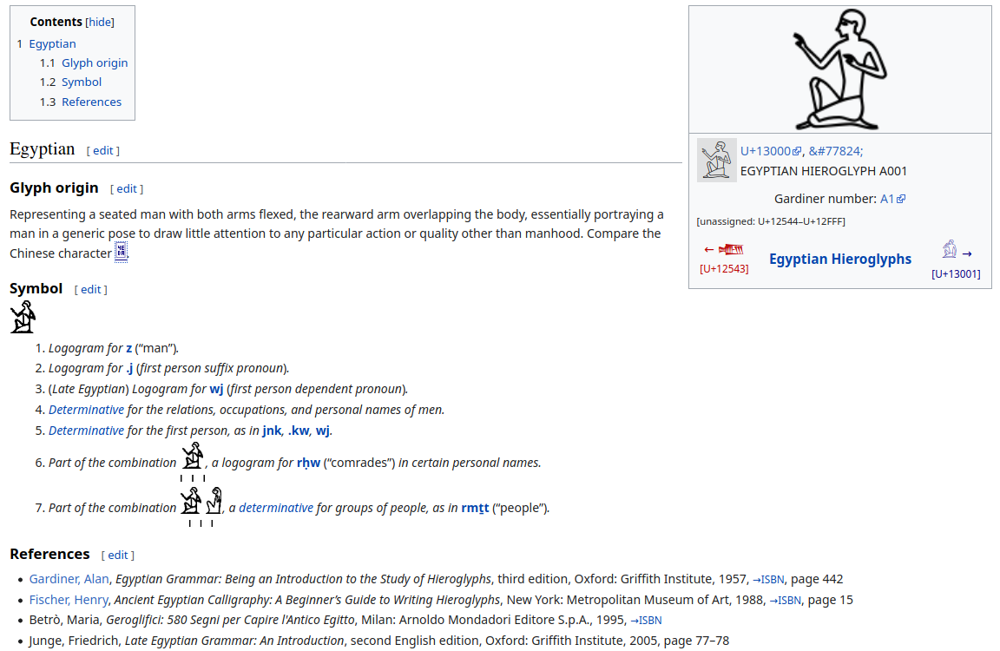
and the next one, notice that they were initially the same letter I. есть is both to be and to eat.
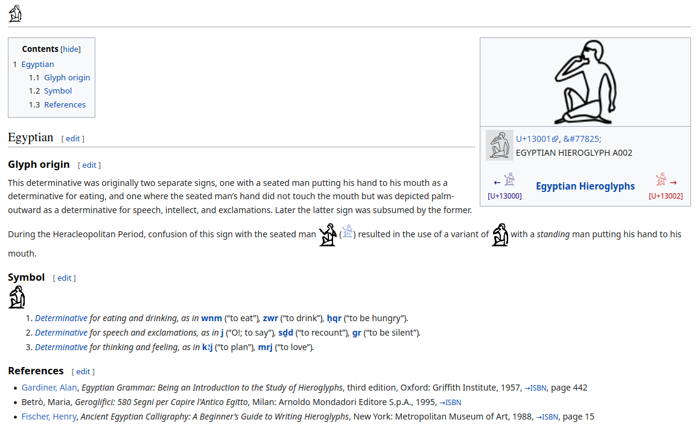
All those other people signs could be related to mayan faces, or could be not, I'm pretty sure somebody had to compare them before me. And I know none, so why I bother.
what
א ב ג ד ה ו ז ח ט
ע פ צ ק ר ש ת
shows is that צ ק are anomalies. (there's neither צ or ק in russian or greek)
thus
א ב ג ד ה ו ז ח ט
י כ ל מ נ ס ע פ ר ש ת
The question about כ ל (k & l) between I & M raises again and from the other end.
Without צ ק that 22-letter alphabet becomes 20-letter alphabet. Remove כ ל and it is 18-letter alphabet, but I would rather remove ט & dס because latin doesn't have them. but jkl is quite a wide-known problem of the lating. Is it Jesus Kristos eLohim?
Thus alphabet is major and minor ascending and descending? Where did I take it? I saw there this two by two. in music
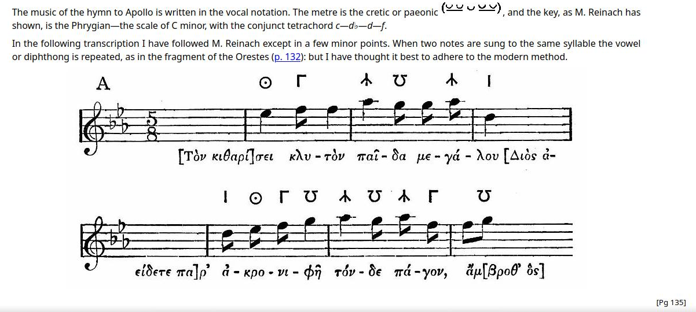
I doubt it's minor and major, I think it's some song, but it is here because of how otes are noted. with letters. And this system seems to me very ancient because of the letters they use, what is that ᛣ sing?
ΓΘΙ order makes that Г H and the one before it is probably U? the ו of F? And if these are vowels, then ☉-like simbol is not Θ but Ο and that ᛣ-like symbol is probably A.
AUГOI is AUHOI is AUEOI, Г as E, interesting, but I'm in doubts.
AUEOI is a very alphabetic way to order/arrange/orange the vowels, even with O where M is. Beautiful, but I'm still in doubts, I need to study this musical theory before I speculate about it, and I still haven't read that book. Let me stop smoking weed and start reading again. And you will build something too.
I dig through that book, and I notice that it could be a huge tool to use but I haven't read it and what I speculate about it is ridiculous at least.
Just few pictures to show that it's actually a descending mode in greek alphabetic order:
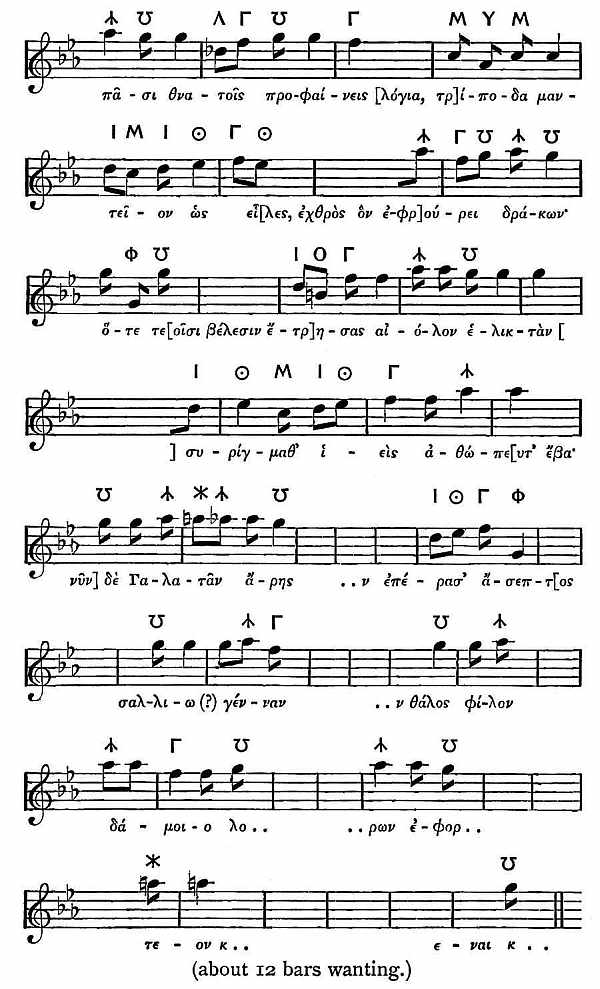
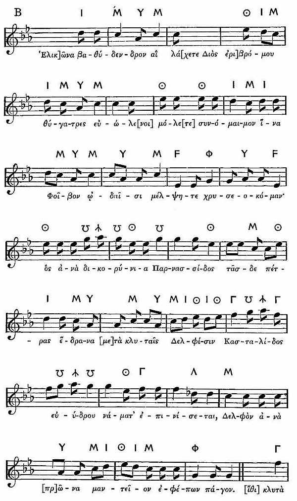
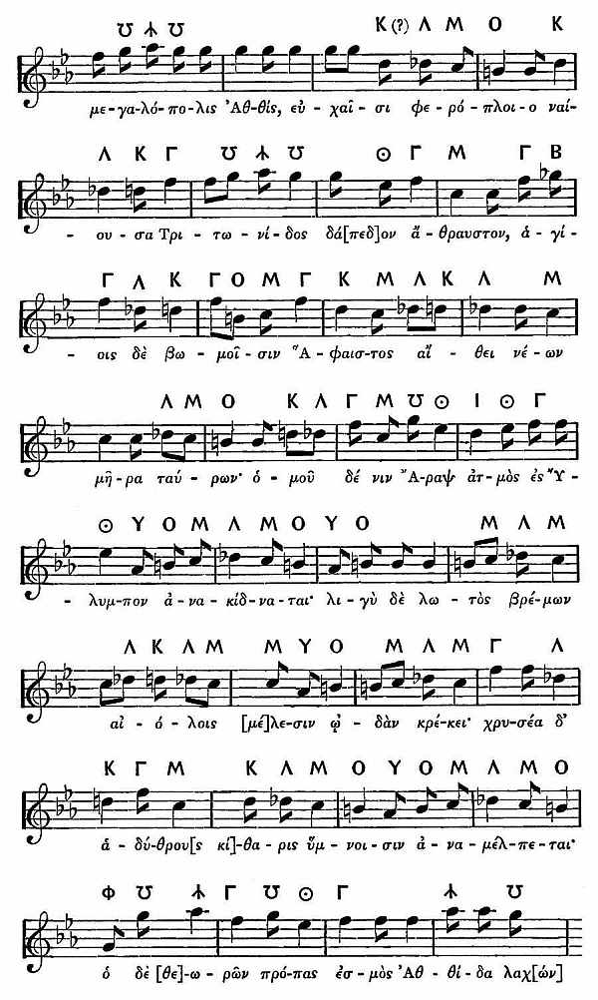
I will line them as much as I can do by the notes present here: (𝈙)𝈘υΓΘΛΜΟΥΦ?F
And I wonder what they are, because they're not https://en.wikipedia.org/wiki/Musical_system_of_ancient_Greece
which is
𝈀𝈁𝈂𝈃𝈄𝈅𝈆𝈇𝈈𝈉𝈊𝈋𝈌𝈍𝈎𝈏𝈐𝈑𝈒𝈓𝈔𝈕𝈖𝈗𝈘𝈙𝈚𝈛𝈜𝈝𝈞𝈟𝈠𝈡𝈢𝈣𝈤𝈥𝈦𝈧𝈨𝈩𝈪𝈫𝈬𝈭𝈮𝈯𝈰𝈱𝈲𝈳𝈴𝈵𝈶𝈷𝈸𝈹𝈺𝈻𝈼𝈽𝈾𝈿𝉀𝉁 𝉂 𝉃 𝉄𝉅
and now I see the 𝈀 and I recognize them all laying at their side for some reason. Or maybe not. They used to be rotated in the other chart I saw:
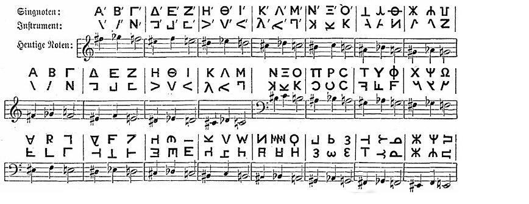
so who knows maybe they want us to use normal greek letters for the other signs?
Ah yeah, the previous image. The way they use all these diez bemol and bekars only tell me that greeks had all their letters whether higher or lower than almost all of ours, which only meet exactly in some 10% of those cases.
And I see that those examples do repeat the singnoten in this chart. Г is not E, only from some modern tradition do they look similar, because they are at the same line. And that sign Г's note has is not diez but bekar, бекар, natural.
And suddenly I see that song's diapason, and I see that the records are in different key:

The one in the treble clef should be raised several tones up to the ♭♭♭ (or rather we have to lower ♭♭♭ those several lines) and the one in the bass clef should be lowered at few lines too (see the F which is final here, but only in the middle of the whole diapason or is range the word)
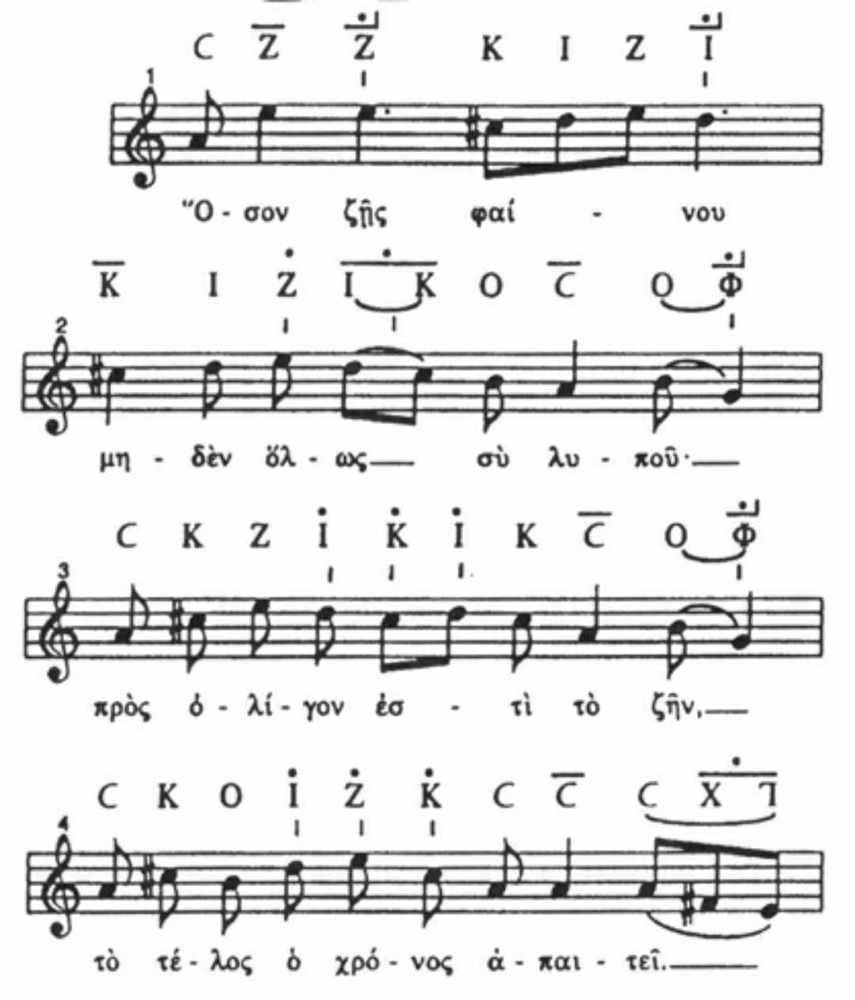
Here tonal sequence is ZIKOCФХ𝈫 or something.
This comparison of two system shows that greek music was much more microtonal than our, or is it why vowels are told to be sung and they're at some good range from one another. Let's select those vowels:
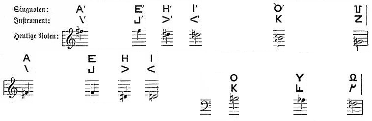
As you can see, distance between vowels is large enough to consider them some normal pentatonic scale. Only those additional signs Η & Ω don't make much sense: distance between Η and Ι is minimal and actually the distance between Υ and Ω is the same as between Α and Ε, who seem to share the same line (with all the BCD between them, and yet A is higher by that diez. which is a distance between D & E in modern scale. Don't Hs differ from those Is in that very semitone? What am I talking about?
...